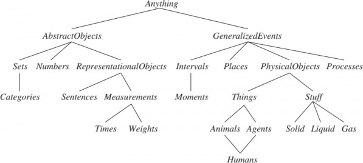
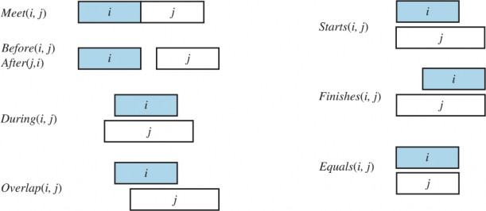
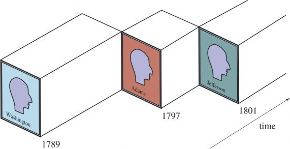
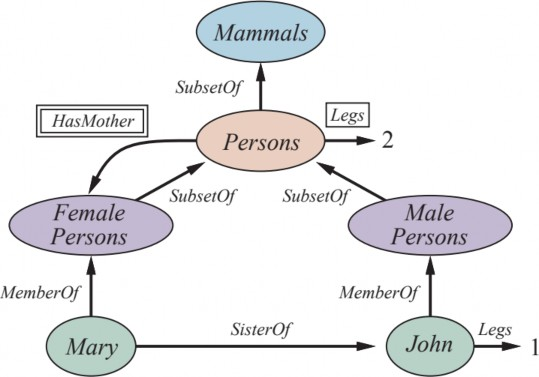
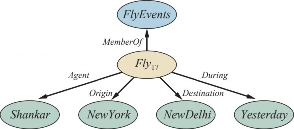
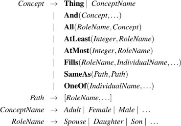

CHƯƠNG 10 BIỂU DIỄN TRI THỨC
Trong chương này, chúng tôi trình bày cách biểu diễn các sự kiện đa dạng về thế giới thực dưới
dạng có thể sử dụng để suy luận và giải quyết vấn đề.
Các chương trước đã cho thấy một tác nhân (agent) với cơ sở tri thức có thể đưa ra các suy luận
giúp nó hành động phù hợp. Trong chương này, chúng tôi giải quyết câu hỏi về nội dung cần đưa
vào cơ sở tri thức của tác nhân đó—cách biểu diễn các sự kiện về thế giới. Chúng tôi sử dụng logic
bậc nhất làm ngôn ngữ biểu diễn, nhưng các chương sau sẽ giới thiệu các hình thức biểu diễn khác
như:
Dù bạn sử dụng hình thức biểu diễn nào, các sự kiện về thế giới vẫn cần được xử lý, và chương
này sẽ giúp bạn hiểu rõ hơn về vấn đề này.
Sau đó, chúng tôi quay lại xem xét công nghệ suy luận với nội dung này:
Kỹ thuật Bản thể luận (Ontological Engineering)
Trong các lĩnh vực "đồ chơi" (toy domains), việc lựa chọn cách biểu diễn không quá quan trọng;
nhiều lựa chọn đều có thể hoạt động. Tuy nhiên, các lĩnh vực phức tạp như mua sắm trên Internet
hay lái xe trong điều kiện giao thông đòi hỏi những cách biểu diễn tổng quát và linh hoạt hơn.
Chương này sẽ trình bày cách tạo ra những biểu diễn như vậy, tập trung vào các khái niệm chung—
chẳng hạn như Sự kiện (Events), Thời gian (Time), Đối tượng vật lý (Physical Objects) và Niềm—xuất hiện trong nhiều lĩnh vực khác nhau. Việc biểu diễn các khái niệm trừu tượng
này đôi khi được gọi là kỹ thuật bản thể luận (ontological engineering).
Chúng ta không thể hy vọng biểu diễn mọi thứ trên thế giới, ngay cả trong một cuốn sách giáo
khoa dày 1000 trang, nhưng chúng ta có thể để lại các "chỗ giữ chỗ" (placeholders) để tri thức mới
trong bất kỳ lĩnh vực nào có thể được thêm vào sau này. Ví dụ, chúng ta sẽ định nghĩa thế nào là
một đối tượng vật lý, và các chi tiết về các loại đối tượng khác nhau—robot, tivi, sách, hoặc bất
cứ thứ gì—có thể được điền vào sau. Điều này tương tự như cách các nhà thiết kế một framework
lập trình hướng đối tượng (chẳng hạn như framework đồ họa Java Swing) định nghĩa các khái
niệm chung như Cửa sổ (Window), với kỳ vọng người dùng sẽ sử dụng chúng để định nghĩa các
khái niệm cụ thể hơn như Cửa sổ bảng tính (SpreadsheetWindow). Khung khái niệm tổng quát này
được gọi là bản thể luận cấp cao (upper ontology) do quy ước vẽ đồ thị với các khái niệm chung
ở trên cùng và các khái niệm cụ thể hơn ở phía dưới, như trong Hình 10.1.

Hình 10.1 Ontology tổng quát của thế giới, thể hiện các chủ đề sẽ được đề cập sau trong chương.
Mỗi liên kết chỉ ra rằng khái niệm phía dưới là một trường hợp đặc biệt của khái niệm phía trên.
Các trường hợp đặc biệt không nhất thiết phải rời rạc - con người vừa là động vật vừa là tác nhân.
Chúng ta sẽ thấy trong Mục 10.3.2 lý do tại sao đối tượng vật lý lại thuộc về sự kiện tổng quát.
Trước khi xem xét sâu hơn về bản thể luận, chúng ta cần nêu rõ một lưu ý quan trọng. Chúng ta
đã chọn sử dụng logic bậc nhất (first-order logic) để thảo luận về nội dung và tổ chức tri thức, mặc
dù một số khía cạnh của thế giới thực rất khó nắm bắt trong logic bậc nhất. Khó khăn chính là hầu
hết các khái quát hóa đều có ngoại lệ hoặc chỉ đúng ở một mức độ nào đó. Ví dụ, mặc dù quy tắc
"cà chua có màu đỏ" rất hữu ích, nhưng một số quả cà chua lại có màu xanh, vàng hoặc cam. Các
ngoại lệ tương tự có thể được tìm thấy đối với hầu hết các quy tắc trong chương này. Khả năng xử
lý ngoại lệ và sự không chắc chắn là cực kỳ quan trọng, nhưng nó lại độc lập với nhiệm vụ hiểu
bản thể luận tổng quát. Vì lý do này, chúng ta sẽ hoãn thảo luận về ngoại lệ đến Mục 10.5 của
chương này, và chủ đề tổng quát hơn về suy luận với sự không chắc chắn đến Chương 12.
Vậy bản thể luận cấp cao có tác dụng gì? Hãy xem xét bản thể luận về mạch điện trong Mục 8.4.2.
Nó đưa ra nhiều giả định đơn giản hóa: thời gian hoàn toàn bị bỏ qua; tín hiệu được cố định và
không lan truyền; cấu trúc mạch không thay đổi. Một bản thể luận tổng quát hơn sẽ xem xét các
tín hiệu tại những thời điểm cụ thể, bao gồm cả chiều dài dây dẫn và độ trễ lan truyền. Điều này
cho phép chúng ta mô phỏng các đặc tính thời gian của mạch, và thực tế, các kỹ sư mạch thường
xuyên thực hiện những mô phỏng như vậy.
Chúng ta cũng có thể giới thiệu các loại cổng logic thú vị hơn, ví dụ, bằng cách mô tả công nghệ
(TTL, CMOS, v.v.) cũng như đặc tả đầu vào–đầu ra. Nếu muốn thảo luận về độ tin cậy hoặc chẩn
đoán, chúng ta sẽ bao gồm khả năng cấu trúc mạch hoặc tính chất của các cổng có thể thay đổi tự
phát. Để giải thích các điện dung ký sinh, chúng ta cần biểu diễn vị trí của các dây dẫn trên bảng
mạch.
Nếu nhìn vào thế giới Wumpus, các cân nhắc tương tự cũng áp dụng. Mặc dù chúng ta có biểu
diễn thời gian, nhưng nó có cấu trúc đơn giản: Không có gì xảy ra ngoại trừ khi tác nhân hành
động, và mọi thay đổi đều tức thời. Một bản thể luận tổng quát hơn, phù hợp hơn với thế giới thực,
sẽ cho phép các thay đổi đồng thời và kéo dài theo thời gian. Chúng ta cũng đã sử dụng vị từ Pitđể chỉ những ô nào có hố. Chúng ta có thể cho phép nhiều loại hố khác nhau bằng cách có nhiều
cá thể thuộc lớp hố, mỗi cá thể có các thuộc tính khác nhau. Tương tự, chúng ta có thể muốn bao
gồm các loài động vật khác ngoài Wumpus. Có thể không thể xác định chính xác loài nào dựa trên
các dấu hiệu cảm nhận có sẵn, vì vậy chúng ta cần xây dựng một hệ thống phân loại sinh học để
giúp tác nhân dự đoán hành vi của những sinh vật sống trong hang động từ những manh mối ít ỏi.
Đối với bất kỳ bản thể luận chuyên dụng nào, chúng ta có thể thực hiện những thay đổi như trên
để tiến gần hơn đến tính tổng quát. Một câu hỏi hiển nhiên đặt ra là: liệu tất cả các bản thể luận
này có hội tụ về một bản thể luận đa dụng chung không? Sau nhiều thế kỷ nghiên cứu triết học và
tính toán, câu trả lời là "Có thể". Trong mục này, chúng tôi trình bày một bản thể luận đa dụng
tổng hợp các ý tưởng từ những nghiên cứu đó. Hai đặc điểm chính của các bản thể luận đa dụng
phân biệt chúng với tập hợp các bản thể luận chuyên dụng:
Một bản thể luận đa dụng phải có thể áp dụng trong hầu hết mọi lĩnh vực chuyên dụng (với
việc bổ sung các tiên đề cụ thể của lĩnh vực đó). Điều này có nghĩa là không có vấn đề biểu
diễn nào có thể bị bỏ qua hoặc che giấu.
Trong bất kỳ lĩnh vực đủ phức tạp nào, các lĩnh vực tri thức khác nhau phải được thống
nhất, vì việc suy luận và giải quyết vấn đề có thể liên quan đến nhiều lĩnh vực cùng một
lúc. Ví dụ, một hệ thống robot sửa chữa mạch điện cần suy luận về mạch điện dựa trên kết
nối điện và bố cục vật lý, đồng thời cũng cần suy luận về thời gian, cả để phân tích thời
gian mạch và ước tính chi phí nhân công. Do đó, các câu mô tả thời gian phải có thể kết
hợp với những câu mô tả bố cục không gian và phải hoạt động hiệu quả cho cả đơn vị
nanogiây lẫn phút, angstrom lẫn mét.
Chúng ta phải thừa nhận ngay từ đầu rằng nỗ lực xây dựng bản thể luận đa dụng cho đến nay chỉ
đạt được thành công hạn chế. Không có ứng dụng AI hàng đầu nào (như liệt kê trong Chương 1)
sử dụng bản thể luận đa dụng—tất cả đều dựa vào kỹ thuật tri thức chuyên dụng và học máy. Các
yếu tố xã hội/chính trị có thể khiến các bên cạnh tranh khó đồng thuận về một bản thể luận chung.
Như Tom Gruber (2004) đã nói: "Mọi bản thể luận đều là một hiệp ước—một thỏa thuận xã hội—
giữa những người có động cơ chung trong việc chia sẻ." Khi các mối quan tâm cạnh tranh lấn át
động cơ chia sẻ, sẽ không thể có bản thể luận chung. Số lượng các bên liên quan càng ít thì việc
tạo ra bản thể luận càng dễ dàng, và do đó, việc tạo ra một bản thể luận đa dụng khó hơn nhiều so
với một bản thể luận hạn chế mục đích, chẳng hạn như Open Biomedical Ontology (Smith et al.,
2007). Những bản thể luận hiện có được xây dựng theo bốn hướng chính:
Ví dụ, Google Knowledge Graph sử dụng nội dung bán cấu trúc từ Wikipedia, kết hợp với các nội
dung khác được thu thập từ khắp nơi trên web dưới sự kiểm duyệt của con người. Nó chứa hơn 70
tỷ dữ kiện và cung cấp câu trả lời cho khoảng một phần ba các lượt tìm kiếm trên Google (Dong
et al., 2014).
Danh mục và Đối tượng
Việc tổ chức các đối tượng thành các danh mục là một phần quan trọng của biểu diễn tri thức. Mặc
dù tương tác với thế giới diễn ra ở cấp độ các đối tượng riêng lẻ, phần lớn lập luận lại diễn ra ở
cấp độ danh mục. Ví dụ, một người mua sắm thường có mục tiêu mua một quả bóng rổ nói chung,
chứ không phải một quả bóng rổ cụ thể như 𝐵𝐵9. Các danh mục cũng giúp đưa ra dự đoán về các
đối tượng sau khi chúng được phân loại. Người ta suy ra sự hiện diện của các đối tượng từ đầu vào
tri giác, suy ra tư cách thành viên danh mục từ các thuộc tính được nhận thức của đối tượng, và
sau đó sử dụng thông tin danh mục để dự đoán về đối tượng. Ví dụ, từ lớp da xanh và vàng loang
lổ, đường kính một foot, hình bầu dục, thịt đỏ, hạt đen, và sự hiện diện ở khu trái cây, người ta có
thể suy ra rằng một đối tượng là quả dưa hấu; từ đó, người ta suy ra rằng nó sẽ hữu ích cho món
salad trái cây.
Có hai lựa chọn để biểu diễn các danh mục trong logic bậc nhất: vị từ và đối tượng. Nghĩa là,
chúng ta có thể sử dụng vị từ 𝐵𝑎𝑠𝑘𝑒𝑡𝑏𝑎𝑙𝑙(𝑏), hoặc chúng ta có thể vật chất hóa danh mục thành
một đối tượng, 𝐵𝑎𝑠𝑘𝑒𝑡𝑏𝑎𝑙𝑙𝑠. Sau đó, chúng ta có thể nói 𝑀𝑒𝑚𝑏𝑒𝑟(𝑏, 𝐵𝑎𝑠𝑘𝑒𝑡𝑏𝑎𝑙𝑙𝑠), viết tắt là
𝑏 ∈ 𝐵𝑎𝑠𝑘𝑒𝑡𝑏𝑎𝑙𝑙𝑠, để chỉ rằng 𝑏 là một thành viên của danh mục các quả bóng rổ. Chúng ta nói
𝑆𝑢𝑏𝑠𝑒𝑡(𝐵𝑎𝑠𝑘𝑒𝑡𝑏𝑎𝑙𝑙𝑠, 𝐵𝑎𝑙𝑙𝑠), viết tắt là 𝐵𝑎𝑠𝑘𝑒𝑡𝑏𝑎𝑙𝑙𝑠 ⊂ 𝐵𝑎𝑙𝑙𝑠, để chỉ rằng 𝐵𝑎𝑠𝑘𝑒𝑡𝑏𝑎𝑙𝑙𝑠 là một
danh mục con của 𝐵𝑎𝑙𝑙𝑠. Chúng ta sẽ sử dụng các thuật ngữ danh mục con, lớp con và tập hợp
con thay thế cho nhau.
Các danh mục tổ chức tri thức thông qua kế thừa. Nếu chúng ta nói rằng tất cả các thể hiện của
danh mục 𝐹𝑜𝑜𝑑 đều có thể ăn được, và nếu chúng ta khẳng định rằng 𝐹𝑟𝑢𝑖𝑡 là một lớp con của
𝐹𝑜𝑜𝑑 và 𝐴𝑝𝑝𝑙𝑒𝑠 là một lớp con của 𝐹𝑟𝑢𝑖𝑡, thì chúng ta có thể suy ra rằng mọi quả táo đều có thể
ăn được. Chúng ta nói rằng các quả táo riêng lẻ kế thừa thuộc tính có thể ăn được, trong trường
hợp này từ tư cách thành viên của chúng trong danh mục 𝐹𝑜𝑜𝑑.
Các quan hệ lớp con tổ chức các danh mục thành một hệ thống phân cấp phân loại hoặc phân loại
học. Các hệ thống phân loại đã được sử dụng một cách rõ ràng trong nhiều thế kỷ trong các lĩnh
vực kỹ thuật. Hệ thống phân loại lớn nhất tổ chức khoảng 10 triệu loài còn sống và đã tuyệt chủng,
nhiều trong số đó là bọ cánh cứng, thành một hệ thống phân cấp duy nhất; khoa học thư viện đã
phát triển một hệ thống phân loại tất cả các lĩnh vực tri thức, được mã hóa như hệ thống thập phân
Dewey; và các cơ quan thuế cùng các bộ phận chính phủ khác đã phát triển các hệ thống phân loại
rộng lớn về nghề nghiệp và sản phẩm thương mại.
Logic bậc nhất giúp dễ dàng phát biểu các sự kiện về danh mục, bằng cách liên hệ các đối tượng
với danh mục hoặc bằng cách lượng hóa các thành viên của chúng. Dưới đây là một số ví dụ:
Một đối tượng là thành viên của một danh mục.
𝐵𝐵9 ∈ 𝐵𝑎𝑠𝑘𝑒𝑡𝑏𝑎𝑙𝑙𝑠
Một danh mục là lớp con của một danh mục khác.
𝐵𝑎𝑠𝑘𝑒𝑡𝑏𝑎𝑙𝑙𝑠 ⊂ 𝐵𝑎𝑙𝑙𝑠
Tất cả các thành viên của một danh mục có một số thuộc tính.
(𝑥 ∈ 𝐵𝑎𝑠𝑘𝑒𝑡𝑏𝑎𝑙𝑙𝑠) ⇒ 𝑆𝑝ℎ𝑒𝑟𝑖𝑐𝑎𝑙(𝑥)
Các thành viên của một danh mục có thể được nhận biết bởi một số thuộc tính.
𝑂𝑟𝑎𝑛𝑔𝑒(𝑥) ∧ 𝑅𝑜𝑢𝑛𝑑(𝑥) ∧ 𝐷𝑖𝑎𝑚𝑒𝑡𝑒𝑟(𝑥) = 9.5″ ∧ 𝑥 ∈ 𝐵𝑎𝑙𝑙𝑠 ⇒ 𝑥 ∈ 𝐵𝑎𝑠𝑘𝑒𝑡𝑏𝑎𝑙𝑙𝑠
Một danh mục nói chung có một số thuộc tính.
𝐷𝑜𝑔𝑠 ∈ 𝐷𝑜𝑚𝑒𝑠𝑡𝑖𝑐𝑎𝑡𝑒𝑑𝑆𝑝𝑒𝑐𝑖𝑒𝑠
Lưu ý rằng vì 𝐷𝑜𝑔𝑠 là một danh mục và là thành viên của 𝐷𝑜𝑚𝑒𝑠𝑡𝑖𝑐𝑎𝑡𝑒𝑑𝑆𝑝𝑒𝑐𝑖𝑒𝑠, nên
𝐷𝑜𝑚𝑒𝑠𝑡𝑖𝑐𝑎𝑡𝑒𝑑𝑆𝑝𝑒𝑐𝑖𝑒𝑠 phải là một danh mục của các danh mục. Tất nhiên, có nhiều ngoại lệ đối
với các quy tắc trên (ví dụ, các quả bóng rổ bị thủng không phải là hình cầu); chúng ta sẽ giải quyết
các ngoại lệ này sau.
Mặc dù quan hệ lớp con và thành viên là quan trọng nhất đối với các danh mục, chúng ta cũng
muốn có thể phát biểu các quan hệ giữa các danh mục không phải là lớp con của nhau. Ví dụ, nếu
chúng ta chỉ nói rằng 𝑈𝑛𝑑𝑒𝑟𝑔𝑟𝑎𝑑𝑢𝑎𝑡𝑒𝑠 và 𝐺𝑟𝑎𝑑𝑢𝑎𝑡𝑒𝑆𝑡𝑢𝑑𝑒𝑛𝑡𝑠 là các lớp con của 𝑆𝑡𝑢𝑑𝑒𝑛𝑡𝑠, thì
chúng ta chưa nói rằng một sinh viên đại học không thể đồng thời là một sinh viên sau đại học.
Chúng ta nói rằng hai hoặc nhiều danh mục là rời rạc nếu chúng không có thành viên chung. Chúng
ta cũng có thể muốn nói rằng các lớp 𝑈𝑛𝑑𝑒𝑟𝑔𝑟𝑎𝑑𝑢𝑎𝑡𝑒𝑠 và 𝐺𝑟𝑎𝑑𝑢𝑎𝑡𝑒𝑆𝑡𝑢𝑑𝑒𝑛𝑡𝑠 tạo thành một
phân rã đầy đủ của các sinh viên đại học. Một phân rã đầy đủ của các tập hợp rời rạc được gọi là
một phân hoạch. Dưới đây là một số ví dụ khác về ba khái niệm này:
𝐷𝑖𝑠𝑗𝑜𝑖𝑛𝑡({𝐴𝑛𝑖𝑚𝑎𝑙𝑠, 𝑉𝑒𝑔𝑒𝑡𝑎𝑏𝑙𝑒𝑠})
𝐸𝑥ℎ𝑎𝑢𝑠𝑡𝑖𝑣𝑒𝐷𝑒𝑐𝑜𝑚𝑝𝑜𝑠𝑖𝑡𝑖𝑜𝑛({𝐴𝑚𝑒𝑟𝑖𝑐𝑎𝑛𝑠, 𝐶𝑎𝑛𝑎𝑑𝑖𝑎𝑛𝑠, 𝑀𝑒𝑥𝑖𝑐𝑎𝑛𝑠}, 𝑁𝑜𝑟𝑡ℎ𝐴𝑚𝑒𝑟𝑖𝑐𝑎𝑛𝑠)
𝑃𝑎𝑟𝑡𝑖𝑡𝑖𝑜𝑛({𝐴𝑛𝑖𝑚𝑎𝑙𝑠, 𝑃𝑙𝑎𝑛𝑡𝑠, 𝐹𝑢𝑛𝑔𝑖, 𝑃𝑟𝑜𝑡𝑖𝑠𝑡𝑎, 𝑀𝑜𝑛𝑒𝑟𝑎}, 𝐿𝑖𝑣𝑖𝑛𝑔𝑇ℎ𝑖𝑛𝑔𝑠).
(Lưu ý rằng 𝐸𝑥ℎ𝑎𝑢𝑠𝑡𝑖𝑣𝑒𝐷𝑒𝑐𝑜𝑚𝑝𝑜𝑠𝑖𝑡𝑖𝑜𝑛 của 𝑁𝑜𝑟𝑡ℎ𝐴𝑚𝑒𝑟𝑖𝑐𝑎𝑛𝑠 không phải là một 𝑃𝑎𝑟𝑡𝑖𝑡𝑖𝑜𝑛,
vì một số người có hai quốc tịch.) Ba vị từ này được định nghĩa như sau:
𝐷𝑖𝑠𝑗𝑜𝑖𝑛𝑡(𝑠) ⇔ (∀𝑐1, 𝑐2 ∈ 𝑠 ∧ 𝑐2 ∈ 𝑠 ∧ 𝑐1 ≠ 𝑐2 ⇒ 𝐼𝑛𝑡𝑒𝑟𝑠𝑒𝑐𝑡𝑖𝑜𝑛(𝑐1, 𝑐2) = {})
𝐸𝑥ℎ𝑎𝑢𝑠𝑡𝑖𝑣𝑒𝐷𝑒𝑐𝑜𝑚𝑝𝑜𝑠𝑖𝑡𝑖𝑜𝑛(𝑠, 𝑐) ⇔ (∀𝑖 ∈ 𝑐 ⇔ ∃𝑐2 ∈ 𝑠 ∧ 𝑖 ∈ 𝑐2)
𝑃𝑎𝑟𝑡𝑖𝑡𝑖𝑜𝑛(𝑠, 𝑐) ⇔ 𝐷𝑖𝑠𝑗𝑜𝑖𝑛𝑡(𝑠) ∧ 𝐸𝑥ℎ𝑎𝑢𝑠𝑡𝑖𝑣𝑒𝐷𝑒𝑐𝑜𝑚𝑝𝑜𝑠𝑖𝑡𝑖𝑜𝑛(𝑠, 𝑐).
Các danh mục cũng có thể được định nghĩa bằng cách cung cấp các điều kiện cần và đủ cho tư
cách thành viên. Ví dụ, một người độc thân là một nam giới trưởng thành chưa kết hôn:
𝑥 ∈ 𝐵𝑎𝑐ℎ𝑒𝑙𝑜𝑟𝑠 ⇔ 𝑈𝑛𝑚𝑎𝑟𝑟𝑖𝑒𝑑(𝑥) ∧ 𝑥 ∈ 𝐴𝑑𝑢𝑙𝑡𝑠 ∧ 𝑥 ∈ 𝑀𝑎𝑙𝑒𝑠.
Như chúng ta thảo luận trong phần bên lề về các loại tự nhiên ở trang 338, các định nghĩa logic
chặt chẽ cho các danh mục thường chỉ khả thi đối với các thuật ngữ hình thức nhân tạo, chứ không
phải cho các đối tượng thông thường. Nhưng các định nghĩa không phải lúc nào cũng cần thiết.
Cấu trúc vật lý
Ý tưởng rằng một đối tượng có thể là một phần của một đối tượng khác là một ý tưởng quen thuộc.
Mũi của một người là một phần của đầu người đó, Romania là một phần của châu Âu, và chương
này là một phần của cuốn sách này. Chúng ta sử dụng quan hệ 𝑃𝑎𝑟𝑡𝑂𝑓 chung để nói rằng một thứ
là một phần của một thứ khác. Các đối tượng có thể được nhóm thành các hệ thống phân cấp
𝑃𝑎𝑟𝑡𝑂𝑓, gợi nhớ đến hệ thống phân cấp 𝑆𝑢𝑏𝑠𝑒𝑡:
𝑃𝑎𝑟𝑡𝑂𝑓(𝐵𝑢𝑐ℎ𝑎𝑟𝑒𝑠𝑡, 𝑅𝑜𝑚𝑎𝑛𝑖𝑎)
𝑃𝑎𝑟𝑡𝑂𝑓(𝑅𝑜𝑚𝑎𝑛𝑖𝑎, 𝐸𝑎𝑠𝑡𝑒𝑟𝑛𝐸𝑢𝑟𝑜𝑝𝑒)
𝑃𝑎𝑟𝑡𝑂𝑓(𝐸𝑎𝑠𝑡𝑒𝑟𝑛𝐸𝑢𝑟𝑜𝑝𝑒, 𝐸𝑢𝑟𝑜𝑝𝑒)
𝑃𝑎𝑟𝑡𝑂𝑓(𝐸𝑢𝑟𝑜𝑝𝑒, 𝐸𝑎𝑟𝑡ℎ).
Quan hệ 𝑃𝑎𝑟𝑡𝑂𝑓 có tính bắc cầu và phản xạ; nghĩa là:
𝑃𝑎𝑟𝑡𝑂𝑓(𝑥, 𝑦) ∧ 𝑃𝑎𝑟𝑡𝑂𝑓(𝑦, 𝑧) ⇒ 𝑃𝑎𝑟𝑡𝑂𝑓(𝑥, 𝑧)
𝑃𝑎𝑟𝑡𝑂𝑓(𝑥, 𝑥).
Do đó, chúng ta có thể kết luận 𝑃𝑎𝑟𝑡𝑂𝑓(𝐵𝑢𝑐ℎ𝑎𝑟𝑒𝑠𝑡, 𝐸𝑎𝑟𝑡ℎ). Các danh mục của các đối tượng
tổng hợp thường được đặc trưng bởi các quan hệ cấu trúc giữa các phần. Ví dụ, một sinh vật hai
chân là một đối tượng có chính xác hai chân gắn vào một thân:
𝐵𝑖𝑝𝑒𝑑(𝑎) ⇒ ∃𝑙1, 𝑙2, 𝑏 𝐿𝑒𝑔(𝑙1) ∧ 𝐿𝑒𝑔(𝑙2) ∧ 𝐵𝑜𝑑𝑦(𝑏) ∧ 𝑃𝑎𝑟𝑡𝑂𝑓(𝑙1, 𝑎) ∧ 𝑃𝑎𝑟𝑡𝑂𝑓(𝑙2, 𝑎)
∧ 𝑃𝑎𝑟𝑡𝑂𝑓(𝑏, 𝑎) ∧ 𝐴𝑡𝑡𝑎𝑐ℎ𝑒𝑑(𝑙1, 𝑏) ∧ 𝐴𝑡𝑡𝑎𝑐ℎ𝑒𝑑(𝑙2, 𝑏) ∧ 𝑙1
≠ 𝑙2 ∧ [∀𝑙3 𝐿𝑒𝑔(𝑙3) ∧ 𝑃𝑎𝑟𝑡𝑂𝑓(𝑙3, 𝑎) ⇒ (𝑙3 = 𝑙1 ∨ 𝑙3 = 𝑙2)].
Ký hiệu cho "chính xác hai" hơi phức tạp; chúng ta buộc phải nói rằng có hai chân, chúng không
giống nhau, và nếu ai đó đề xuất một chân thứ ba, thì nó phải giống một trong hai chân kia. Trong
Mục 10.5.2, chúng ta sẽ mô tả một hình thức gọi là logic mô tả giúp dễ dàng biểu diễn các ràng
buộc như "chính xác hai."
Chúng ta có thể định nghĩa một quan hệ 𝑃𝑎𝑟𝑡𝑃𝑎𝑟𝑡𝑖𝑡𝑖𝑜𝑛 tương tự như quan hệ 𝑃𝑎𝑟𝑡𝑖𝑡𝑖𝑜𝑛 cho các
danh mục. (Xem Bài tập 10.DECM.) Một đối tượng được cấu thành từ các phần trong
𝑃𝑎𝑟𝑡𝑃𝑎𝑟𝑡𝑖𝑡𝑖𝑜𝑛 của nó và có thể được xem như có được một số thuộc tính từ các phần đó. Ví dụ,
khối lượng của một đối tượng tổng hợp là tổng khối lượng của các phần. Lưu ý rằng điều này
không áp dụng cho các danh mục, vốn không có khối lượng, mặc dù các phần tử của chúng có thể
có.
Cũng hữu ích khi định nghĩa các đối tượng tổng hợp với các phần xác định nhưng không có cấu
trúc cụ thể. Ví dụ, chúng ta có thể muốn nói "Những quả táo trong túi này nặng hai pound." Cám
dỗ sẽ là gán trọng lượng này cho tập hợp các quả táo trong túi, nhưng đây sẽ là một sai lầm vì tập
hợp là một khái niệm toán học trừu tượng có các phần tử nhưng không có trọng lượng. Thay vào
đó, chúng ta cần một khái niệm mới, mà chúng ta sẽ gọi là một nhóm. Ví dụ, nếu các quả táo là
𝐴𝑝𝑝𝑙𝑒1, 𝐴𝑝𝑝𝑙𝑒2 và 𝐴𝑝𝑝𝑙𝑒3, thì:
𝐵𝑢𝑛𝑐ℎ𝑂𝑓({𝐴𝑝𝑝𝑙𝑒1, 𝐴𝑝𝑝𝑙𝑒2, 𝐴𝑝𝑝𝑙𝑒3})
biểu thị đối tượng tổng hợp với ba quả táo như các phần (không phải là các phần tử). Sau đó, chúng
ta có thể sử dụng nhóm như một đối tượng bình thường, dù không có cấu trúc. Lưu ý rằng
𝐵𝑢𝑛𝑐ℎ𝑂𝑓({𝑥}) = 𝑥. Hơn nữa, 𝐵𝑢𝑛𝑐ℎ𝑂𝑓(𝐴𝑝𝑝𝑙𝑒𝑠) là đối tượng tổng hợp bao gồm tất cả các quả
táo—không nên nhầm lẫn với 𝐴𝑝𝑝𝑙𝑒𝑠, danh mục hoặc tập hợp tất cả các quả táo.
Chúng ta có thể định nghĩa 𝐵𝑢𝑛𝑐ℎ𝑂𝑓 theo quan hệ 𝑃𝑎𝑟𝑡𝑂𝑓. Rõ ràng, mỗi phần tử của 𝑠 là một
phần của 𝐵𝑢𝑛𝑐ℎ𝑂𝑓(𝑠):
∀𝑥 𝑥 ∈ 𝑠 ⇒ 𝑃𝑎𝑟𝑡𝑂𝑓(𝑥, 𝐵𝑢𝑛𝑐ℎ𝑂𝑓(𝑠)).
Hơn nữa, 𝐵𝑢𝑛𝑐ℎ𝑂𝑓(𝑠) là đối tượng nhỏ nhất thỏa mãn điều kiện này. Nói cách khác, 𝐵𝑢𝑛𝑐ℎ𝑂𝑓(𝑠)
phải là một phần của bất kỳ đối tượng nào có tất cả các phần tử của 𝑠 như các phần:
∀𝑦 [∀𝑥 𝑥 ∈ 𝑠 ⇒ 𝑃𝑎𝑟𝑡𝑂𝑓(𝑥, 𝑦)] ⇒ 𝑃𝑎𝑟𝑡𝑂𝑓(𝐵𝑢𝑛𝑐ℎ𝑂𝑓(𝑠), 𝑦).
Các tiên đề này là một ví dụ về kỹ thuật tối thiểu hóa logic, nghĩa là định nghĩa một đối tượng như
là đối tượng nhỏ nhất thỏa mãn các điều kiện nhất định.
Đo lường
Trong cả các lý thuyết khoa học và thông thường về thế giới, các đối tượng có chiều cao, khối
lượng, chi phí, v.v. Các giá trị mà chúng ta gán cho các thuộc tính này được gọi là các đại lượng
đo. Các đại lượng đo định lượng thông thường khá dễ biểu diễn. Chúng ta tưởng tượng rằng vũ trụ
bao gồm các "đối tượng đo" trừu tượng, chẳng hạn như độ dài là độ dài của đoạn thẳng này: |——
—|. Chúng ta có thể gọi độ dài này là 1.5 inch hoặc 3.81 cm. Do đó, cùng một độ dài có các tên
khác nhau trong ngôn ngữ của chúng ta. Chúng ta biểu diễn độ dài bằng một hàm đơn vị nhận một
số làm đối số. (Một cách tiếp cận khác được khám phá trong Bài tập 10.ALTM.) Hàm đơn vị
Nếu đoạn thẳng được gọi là 𝐿1, chúng ta có thể viết:
𝐿𝑒𝑛𝑔𝑡ℎ(𝐿1) = 𝐼𝑛𝑐ℎ𝑒𝑠(1.5) = 𝐶𝑒𝑛𝑡𝑖𝑚𝑒𝑡𝑒𝑟𝑠(3.81).
Việc chuyển đổi giữa các đơn vị được thực hiện bằng cách đặt bội số của một đơn vị bằng một
đơn vị khác:
𝐶𝑒𝑛𝑡𝑖𝑚𝑒𝑡𝑒𝑟𝑠(2.54 × 𝑑) = 𝐼𝑛𝑐ℎ𝑒𝑠(𝑑).
Các tiên đề tương tự có thể được viết cho pound và kilogram, giây và ngày, đô la và cent. Các đại
lượng đo có thể được sử dụng để mô tả các đối tượng như sau:
𝐷𝑖𝑎𝑚𝑒𝑡𝑒𝑟(𝐵𝑎𝑠𝑘𝑒𝑡𝑏𝑎𝑙𝑙12) = 𝐼𝑛𝑐ℎ𝑒𝑠(9.5)
𝐿𝑖𝑠𝑡𝑃𝑟𝑖𝑐𝑒(𝐵𝑎𝑠𝑘𝑒𝑡𝑏𝑎𝑙𝑙12) = $(19)
𝑊𝑒𝑖𝑔ℎ𝑡(𝐵𝑢𝑛𝑐ℎ𝑂𝑓({𝐴𝑝𝑝𝑙𝑒1, 𝐴𝑝𝑝𝑙𝑒2, 𝐴𝑝𝑝𝑙𝑒3})) = 𝑃𝑜𝑢𝑛𝑑𝑠(2)
𝑑 ∈ 𝐷𝑎𝑦𝑠 ⇒ 𝐷𝑢𝑟𝑎𝑡𝑖𝑜𝑛(𝑑) = 𝐻𝑜𝑢𝑟𝑠(24).
Lưu ý rằng $(1) không phải là một tờ đô la—nó là một mức giá. Người ta có thể có hai tờ đô la,
nhưng chỉ có một đối tượng duy nhất được gọi là $(1). Cũng lưu ý rằng, mặc dù 𝐼𝑛𝑐ℎ𝑒𝑠(0) và
𝐶𝑒𝑛𝑡𝑖𝑚𝑒𝑡𝑒𝑟𝑠(0) đều chỉ cùng một độ dài bằng không, chúng không giống với các đại lượng đo
bằng không khác, chẳng hạn như 𝑆𝑒𝑐𝑜𝑛𝑑𝑠(0).
Một số danh mục có định nghĩa chặt chẽ: một vật thể là hình tam giác nếu và chỉ nếu nó là đa giác
có ba cạnh. Mặt khác, hầu hết các danh mục trong thế giới thực không có định nghĩa rõ ràng;
những danh mục này được gọi là loại tự nhiên. Ví dụ, cà chua thường có màu đỏ xỉn, hình cầu,
có vết lõm ở phía trên nơi cuống đã gắn vào, đường kính khoảng hai đến bốn inch, với lớp vỏ
mỏng nhưng dai, và bên trong có thịt, hạt và nước. Tuy nhiên, có sự biến đổi: một số quả cà chua
có màu vàng hoặc cam, cà chua chưa chín có màu xanh lá cây, một số nhỏ hơn hoặc lớn hơn mức
trung bình, và cà chua bi thì đồng loạt nhỏ. Thay vì có một định nghĩa hoàn chỉnh về cà chua,
chúng ta có một tập hợp các đặc điểm giúp xác định những vật thể rõ ràng là cà chua điển hình,
nhưng có thể không xác định dứt khoát những vật thể khác. (Liệu có thể tồn tại một quả cà chua
có lông như quả đào không?)
Điều này đặt ra vấn đề cho một tác nhân logic. Tác nhân không thể chắc chắn rằng một vật thể mà
nó nhận thức được là cà chua, và ngay cả khi chắc chắn, nó cũng không thể xác định được vật thể
đó có những thuộc tính nào của cà chua điển hình. Vấn đề này là hệ quả tất yếu của việc hoạt động
trong môi trường chỉ quan sát được một phần.
Một cách tiếp cận hữu ích là tách biệt điều gì đúng với tất cả các thể hiện của một danh mục và
điều gì chỉ đúng với các thể hiện điển hình. Vì vậy, ngoài danh mục Cà chua, chúng ta cũng sẽ có
danh mục ĐiểnHình(Cà chua). Ở đây, hàm ĐiểnHình ánh xạ một danh mục đến phân lớp chỉ chứa
các thể hiện điển hình:
Đ𝑖ể𝑛𝐻ì𝑛ℎ(𝑐) ⊆ 𝑐.
Hầu hết kiến thức về các loại tự nhiên thực sự sẽ là về các thể hiện điển hình của chúng:
𝑥 ∈ Đ𝑖ể𝑛𝐻ì𝑛ℎ(𝐶à𝑐ℎ𝑢𝑎) ⇒ Đỏ(𝑥) ∧ 𝑇𝑟ò𝑛(𝑥).
Như vậy, chúng ta có thể ghi lại những sự thật hữu ích về các danh mục mà không cần định nghĩa
chính xác. Khó khăn trong việc đưa ra định nghĩa chính xác cho hầu hết các danh mục tự nhiên đã
được Wittgenstein (1953) giải thích sâu sắc. Ông sử dụng ví dụ về trò chơi để chỉ ra rằng các thành
viên của một danh mục chia sẻ "những nét tương đồng gia đình" thay vì các đặc điểm cần và đủ:
định nghĩa chặt chẽ nào bao gồm cờ vua, trò đuổi bắt, bài solitaire và bóng né?
Tính hữu ích của khái niệm định nghĩa chặt chẽ cũng bị Quine (1953) thách thức. Ông chỉ ra rằng
ngay cả định nghĩa "người đàn ông độc thân" là nam giới trưởng thành chưa lập gia đình cũng
đáng ngờ; người ta có thể, ví dụ, đặt câu hỏi về một tuyên bố như "Giáo hoàng là người đàn ông
độc thân." Mặc dù không hoàn toàn sai, cách dùng này chắc chắn không phù hợp vì nó gây ra
những suy luận không mong muốn từ phía người nghe. Căng thẳng này có lẽ có thể được giải
quyết bằng cách phân biệt giữa các định nghĩa logic phù hợp cho biểu diễn tri thức nội bộ và các
tiêu chí tinh tế hơn cho cách sử dụng ngôn ngữ phù hợp. Cách thứ hai có thể đạt được bằng cách
"lọc" các khẳng định được suy ra từ cách thứ nhất. Cũng có thể những thất bại trong cách sử dụng
ngôn ngữ đóng vai trò là phản hồi để sửa đổi các định nghĩa nội bộ, sao cho việc lọc trở nên không
cần thiết.
Các đại lượng đo định lượng đơn giản rất dễ biểu diễn. Các đại lượng đo khác đặt ra nhiều vấn đề
hơn, vì chúng không có thang đo giá trị được thống nhất. Các bài tập có độ khó, các món tráng
miệng có độ ngon, và các bài thơ có vẻ đẹp, nhưng không thể gán số cho những phẩm chất này.
Người ta có thể, trong một khoảnh khắc thuần túy của kế toán, bỏ qua các thuộc tính như vậy như
là vô ích cho mục đích lập luận logic; hoặc, tệ hơn, cố gắng áp đặt một thang đo số cho vẻ đẹp.
Đây sẽ là một sai lầm nghiêm trọng, vì nó không cần thiết. Khía cạnh quan trọng nhất của các đại
lượng đo không phải là các giá trị số cụ thể, mà là thực tế rằng các đại lượng đo có thể được sắp
xếp.
Mặc dù các đại lượng đo không phải là số, chúng ta vẫn có thể so sánh chúng, sử dụng một ký hiệu
sắp xếp như >. Ví dụ, chúng ta có thể tin rằng các bài tập của Norvig khó hơn của Russell, và
người ta đạt điểm thấp hơn trong các bài tập khó hơn:
𝑒1 ∈ 𝐸𝑥𝑒𝑟𝑐𝑖𝑠𝑒𝑠 ∧ 𝑒2 ∈ 𝐸𝑥𝑒𝑟𝑐𝑖𝑠𝑒𝑠 ∧ 𝑊𝑟𝑜𝑡𝑒(𝑁𝑜𝑟𝑣𝑖𝑔, 𝑒1) ∧ 𝑊𝑟𝑜𝑡𝑒(𝑅𝑢𝑠𝑠𝑒𝑙𝑙, 𝑒2)
⇒ 𝐷𝑖𝑓𝑓𝑖𝑐𝑢𝑙𝑡𝑦(𝑒1) > 𝐷𝑖𝑓𝑓𝑖𝑐𝑢𝑙𝑡𝑦(𝑒2). 𝑒1 ∈ 𝐸𝑥𝑒𝑟𝑐𝑖𝑠𝑒𝑠 ∧ 𝑒2
∈ 𝐸𝑥𝑒𝑟𝑐𝑖𝑠𝑒𝑠 ∧ 𝐷𝑖𝑓𝑓𝑖𝑐𝑢𝑙𝑡𝑦(𝑒1) > 𝐷𝑖𝑓𝑓𝑖𝑐𝑢𝑙𝑡𝑦(𝑒2) ⇒ 𝐸𝑥𝑝𝑒𝑐𝑡𝑒𝑑𝑆𝑐𝑜𝑟𝑒(𝑒1)
< 𝐸𝑥𝑝𝑒𝑐𝑡𝑒𝑑𝑆𝑐𝑜𝑟𝑒(𝑒2).
Điều này đủ để cho phép một người quyết định nên làm bài tập nào, ngay cả khi không có giá trị
số nào cho độ khó được sử dụng. (Tuy nhiên, người ta phải khám phá xem ai đã viết bài tập nào.)
Các mối quan hệ đơn điệu như vậy giữa các đại lượng đo tạo thành cơ sở cho lĩnh vực vật lý định
tính, một lĩnh vực con của AI nghiên cứu cách lập luận về các hệ thống vật lý mà không cần đi sâu
vào các phương trình chi tiết và mô phỏng số. Vật lý định tính được thảo luận trong phần ghi chú
lịch sử.
Đối tượng: Vật thể và chất liệu
Thế giới thực có thể được xem như bao gồm các đối tượng nguyên thủy (ví dụ, các hạt nguyên tử)
và các đối tượng tổng hợp được xây dựng từ chúng. Bằng cách lập luận ở cấp độ các đối tượng
lớn như táo và ô tô, chúng ta có thể vượt qua sự phức tạp khi phải xử lý một số lượng lớn các đối
tượng nguyên thủy riêng lẻ. Tuy nhiên, có một phần đáng kể của thực tế dường như chống lại bất
kỳ sự cá thể hóa rõ ràng nào—sự phân chia thành các đối tượng riêng biệt. Chúng ta gọi phần này
bằng cái tên chung là chất liệu. Ví dụ, giả sử tôi có một ít bơ và một con lợn đất trước mặt. Tôi có
thể nói có một con lợn đất, nhưng không có số lượng rõ ràng các "đối tượng bơ," vì bất kỳ phần
nào của một đối tượng bơ cũng là một đối tượng bơ, ít nhất cho đến khi chúng ta đi đến các phần
rất nhỏ. Đây là sự khác biệt chính giữa chất liệu và vật thể. Nếu chúng ta cắt đôi một con lợn đất,
chúng ta không nhận được hai con lợn đất (thật không may). Ngôn ngữ tiếng Anh phân biệt rõ
ràng giữa chất liệu và vật thể. Chúng ta nói "a aardvark," nhưng, ngoại trừ trong các nhà hàng
California sang trọng, người ta không thể nói "a butter." Các nhà ngôn ngữ học phân biệt giữa
danh từ đếm được, như aardvarks, lỗ hổng và định lý, và danh từ không đếm được, như bơ, nước
và năng lượng.
Có một số bản thể học cạnh tranh tuyên bố xử lý sự phân biệt này. Ở đây, chúng tôi mô tả chỉ một;
những bản thể học khác được đề cập trong phần ghi chú lịch sử. Để biểu diễn chất liệu một cách
chính xác, chúng ta bắt đầu với điều hiển nhiên. Chúng ta cần có ít nhất các "khối" chất liệu thô
mà chúng ta tương tác như các đối tượng trong bản thể học của chúng ta. Ví dụ, chúng ta có thể
nhận ra một khối bơ là khối được để lại trên bàn đêm hôm trước; chúng ta có thể nhặt nó lên, cân
nó, bán nó, hoặc bất cứ điều gì. Theo nghĩa này, nó là một đối tượng giống như con lợn đất. Hãy
gọi nó là 𝐵𝑢𝑡𝑡𝑒𝑟𝑠. Chúng ta cũng định nghĩa danh mục 𝐵𝑢𝑡𝑡𝑒𝑟. Một cách không chính thức, các
phần tử của nó sẽ là tất cả những thứ mà người ta có thể nói "Nó là bơ," bao gồm cả 𝐵𝑢𝑡𝑡𝑒𝑟𝑠. Với
một số lưu ý về các phần rất nhỏ mà chúng tôi sẽ bỏ qua ở đây, bất kỳ phần nào của một đối tượng
bơ cũng là một đối tượng bơ:
𝑏 ∈ 𝐵𝑢𝑡𝑡𝑒𝑟 ∧ 𝑃𝑎𝑟𝑡𝑂𝑓(𝑝, 𝑏) ⇒ 𝑝 ∈ 𝐵𝑢𝑡𝑡𝑒𝑟.
Bây giờ chúng ta có thể nói rằng bơ tan chảy ở khoảng 30 độ C:
𝑏 ∈ 𝐵𝑢𝑡𝑡𝑒𝑟 ⇒ 𝑀𝑒𝑙𝑡𝑖𝑛𝑔𝑃𝑜𝑖𝑛𝑡(𝑏, 𝐶𝑒𝑛𝑡𝑖𝑔𝑟𝑎𝑑𝑒(30)).
Chúng ta có thể tiếp tục nói rằng bơ có màu vàng, ít đặc hơn nước, mềm ở nhiệt độ phòng, có hàm
lượng chất béo cao, v.v. Mặt khác, bơ không có kích thước, hình dạng hoặc trọng lượng cụ thể.
Chúng ta có thể định nghĩa các danh mục bơ chuyên biệt hơn như 𝑈𝑛𝑠𝑎𝑙𝑡𝑒𝑑𝐵𝑢𝑡𝑡𝑒𝑟, cũng là một
loại chất liệu. Lưu ý rằng danh mục 𝑃𝑜𝑢𝑛𝑑𝑂𝑓𝐵𝑢𝑡𝑡𝑒𝑟, bao gồm tất cả các đối tượng bơ nặng một
pound, không phải là một loại chất liệu. Nếu chúng ta cắt một pound bơ làm đôi, chúng ta sẽ không,
tiếc thay, nhận được hai pound bơ.
Điều gì thực sự đang diễn ra là thế này: một số thuộc tính là nội tại: chúng thuộc về bản chất của
đối tượng, chứ không phải đối tượng như một tổng thể. Khi bạn cắt một thể hiện của chất liệu làm
đôi, hai phần vẫn giữ các thuộc tính nội tại—những thứ như mật độ, điểm sôi, hương vị, màu sắc,
quyền sở hữu, v.v. Mặt khác, các thuộc tính ngoại lai của chúng—trọng lượng, chiều dài, hình
dạng, v.v.—không được giữ lại khi phân chia. Một danh mục các đối tượng mà trong định nghĩa
của nó chỉ bao gồm các thuộc tính nội tại sau đó là một chất liệu, hoặc danh từ không đếm được;
một lớp bao gồm bất kỳ thuộc tính ngoại lai nào trong định nghĩa của nó là một danh từ đếm được.
𝑆𝑡𝑢𝑓𝑓 và 𝑇ℎ𝑖𝑛𝑔 là các danh mục chất liệu và đối tượng tổng quát nhất, tương ứng.
Sự kiện
Trong Mục 7.7.1, chúng ta đã thảo luận về hành động: những điều xảy ra, như 𝑆ℎ𝑜𝑜𝑡𝑖; và trạng
thái động (fluents): các khía cạnh của thế giới thay đổi, như 𝐻𝑎𝑣𝑒𝐴𝑟𝑟𝑜𝑤𝑖. Cả hai đều được biểu
diễn dưới dạng mệnh đề, và chúng ta sử dụng các tiên đề trạng thái kế tiếp để nói rằng một trạng
thái động sẽ đúng tại thời điểm 𝑡 + 1 nếu hành động tại thời điểm 𝑡 khiến nó trở thành đúng, hoặc
nếu nó đã đúng tại thời điểm 𝑡 và hành động không khiến nó trở thành sai. Điều này áp dụng cho
một thế giới trong đó các hành động là rời rạc, tức thời, xảy ra một lần và không có biến thể trong
cách thực hiện (nghĩa là chỉ có một loại hành động 𝑆ℎ𝑜𝑜𝑡, không có sự phân biệt giữa bắn nhanh,
chậm, lo lắng, v.v.). Nhưng khi chuyển từ các miền đơn giản sang thế giới thực, chúng ta phải đối
mặt với một phạm vi hành động hoặc sự kiện phong phú hơn nhiều.
Hãy xem xét một hành động liên tục, như việc đổ đầy bồn tắm. Một tiên đề trạng thái kế tiếp có
thể nói rằng bồn tắm trống trước khi hành động và đầy khi hành động kết thúc, nhưng nó không
thể mô tả điều gì xảy ra trong quá trình hành động. Nó cũng không thể dễ dàng mô tả hai hành
động xảy ra đồng thời—chẳng hạn như đánh răng trong khi chờ bồn tắm đầy. Để xử lý các trường
hợp như vậy, chúng ta giới thiệu một phương pháp tiếp cận được gọi là phép tính sự kiện (event
calculus).
Các đối tượng của phép tính sự kiện là sự kiện, trạng thái động và điểm thời gian.
𝐴𝑡(𝑆ℎ𝑎𝑛𝑘𝑎𝑟, 𝐵𝑒𝑟𝑘𝑒𝑙𝑒𝑦) là một trạng thái động: một đối tượng đề cập đến sự kiện Shankar đang
ở Berkeley. Sự kiện 𝐸1 của Shankar bay từ San Francisco đến Washington, D.C., được mô tả như
sau:
𝐸1 ∈ 𝐹𝑙𝑦𝑖𝑛𝑔 ∧ 𝐹𝑙𝑦𝑒𝑟(𝐸1, 𝑆ℎ𝑎𝑛𝑘𝑎𝑟) ∧ 𝑂𝑟𝑖𝑔𝑖𝑛(𝐸1, 𝑆𝐹) ∧ 𝐷𝑒𝑠𝑡𝑖𝑛𝑎𝑡𝑖𝑜𝑛(𝐸1, 𝐷𝐶).
Ở đây, 𝐹𝑙𝑦𝑖𝑛𝑔 là danh mục của tất cả các sự kiện bay. Bằng cách vật chất hóa sự kiện, chúng ta
có thể thêm bất kỳ lượng thông tin tùy ý nào về chúng. Ví dụ, chúng ta có thể nói rằng chuyến bay
của Shankar bị xóc với 𝐵𝑢𝑚𝑝𝑦(𝐸1). Trong một bản thể học mà sự kiện là các vị từ 𝑛-ngôi, sẽ
không có cách nào để thêm thông tin bổ sung như vậy; việc chuyển sang vị từ 𝑛 + 1-ngôi không
phải là giải pháp có thể mở rộng.
Để khẳng định rằng một trạng thái động thực sự đúng bắt đầu từ một thời điểm 𝑡1 và tiếp tục đến
thời điểm 𝑡2, chúng ta sử dụng vị từ 𝑇, như trong 𝑇(𝐴𝑡(𝑆ℎ𝑎𝑛𝑘𝑎𝑟, 𝐵𝑒𝑟𝑘𝑒𝑙𝑒𝑦), 𝑡1, 𝑡2). Tương tự,
chúng ta sử dụng 𝐻𝑎𝑝𝑝𝑒𝑛𝑠(𝐸1, 𝑡1, 𝑡2) để nói rằng sự kiện 𝐸1 thực sự đã xảy ra, bắt đầu từ thời
điểm 𝑡1 và kết thúc tại thời điểm 𝑡2. Tập hợp đầy đủ các vị từ cho một phiên bản của phép tính sự
kiện là:
𝑇(𝑓, 𝑡1, 𝑡2): Trạng thái động 𝑓 đúng cho mọi thời điểm giữa 𝑡1 và 𝑡2.
𝐻𝑎𝑝𝑝𝑒𝑛𝑠(𝑒, 𝑡1, 𝑡2): Sự kiện 𝑒 bắt đầu tại thời điểm 𝑡1 và kết thúc tại 𝑡2.
𝐼𝑛𝑖𝑡𝑖𝑎𝑡𝑒𝑠(𝑒, 𝑓, 𝑡): Sự kiện 𝑒 khiến trạng thái động 𝑓 trở thành đúng tại thời điểm 𝑡.
𝑇𝑒𝑟𝑚𝑖𝑛𝑎𝑡𝑒𝑠(𝑒, 𝑓, 𝑡): Sự kiện 𝑒 khiến trạng thái động 𝑓 không còn đúng tại thời điểm 𝑡.
𝐼𝑛𝑖𝑡𝑖𝑎𝑡𝑒𝑑(𝑓, 𝑡1, 𝑡2): Trạng thái động 𝑓 trở thành đúng tại một thời điểm nào đó giữa 𝑡1 và
𝑡2.
𝑇𝑒𝑟𝑚𝑖𝑛𝑎𝑡𝑒𝑑(𝑓, 𝑡1, 𝑡2): Trạng thái động 𝑓 không còn đúng tại một thời điểm nào đó giữa
𝑡1 và 𝑡2.
𝑡1 < 𝑡2: Điểm thời gian 𝑡1 xảy ra trước thời gian 𝑡2.
Chúng ta có thể mô tả tác động của một sự kiện bay:
𝐸 = 𝐹𝑙𝑦𝑖𝑛𝑔(𝑎, ℎ𝑒𝑟𝑒, 𝑡ℎ𝑒𝑟𝑒) ∧ 𝐻𝑎𝑝𝑝𝑒𝑛𝑠(𝐸, 𝑡1, 𝑡2)
⇒ 𝑇𝑒𝑟𝑚𝑖𝑛𝑎𝑡𝑒𝑠(𝐸, 𝐴𝑡(𝑎, ℎ𝑒𝑟𝑒), 𝑡1) ∧ 𝐼𝑛𝑖𝑡𝑖𝑎𝑡𝑒𝑠(𝐸, 𝐴𝑡(𝑎, 𝑡ℎ𝑒𝑟𝑒), 𝑡2).
Chúng ta giả định một sự kiện đặc biệt, 𝑆𝑡𝑎𝑟𝑡, mô tả trạng thái ban đầu bằng cách nói trạng thái
động nào là đúng (sử dụng 𝐼𝑛𝑖𝑡𝑖𝑎𝑡𝑒𝑠) hoặc sai (sử dụng 𝑇𝑒𝑟𝑚𝑖𝑛𝑎𝑡𝑒𝑑) tại thời điểm bắt đầu. Sau
đó, chúng ta có thể mô tả trạng thái động nào đúng tại thời điểm nào bằng một cặp tiên đề cho 𝑇
và ¬𝑇 tuân theo định dạng chung tương tự như các tiên đề trạng thái kế tiếp: Giả sử một sự kiện
xảy ra giữa thời điểm 𝑡1 và 𝑡3, và tại 𝑡2 ở đâu đó trong khoảng thời gian đó, sự kiện thay đổi giá
trị của trạng thái động 𝑓, hoặc khởi tạo nó (làm cho nó đúng) hoặc kết thúc nó (làm cho nó sai).
Sau đó, tại thời điểm 𝑡4 trong tương lai, nếu không có sự kiện can thiệp nào khác thay đổi trạng
thái động (đã kết thúc hoặc khởi tạo nó, tương ứng), thì trạng thái động sẽ duy trì giá trị của nó.
Một cách hình thức, các tiên đề là:
𝐻𝑎𝑝𝑝𝑒𝑛𝑠(𝑒, 𝑡1, 𝑡3) ∧ 𝐼𝑛𝑖𝑡𝑖𝑎𝑡𝑒𝑠(𝑒, 𝑓, 𝑡2) ∧ ¬𝑇𝑒𝑟𝑚𝑖𝑛𝑎𝑡𝑒𝑑(𝑓, 𝑡2, 𝑡4) ∧ 𝑡1 ≤ 𝑡2 ≤ 𝑡3 ≤ 𝑡4
⇒ 𝑇(𝑓, 𝑡2, 𝑡4)𝐻𝑎𝑝𝑝𝑒𝑛𝑠(𝑒, 𝑡1, 𝑡3) ∧ 𝑇𝑒𝑟𝑚𝑖𝑛𝑎𝑡𝑒𝑠(𝑒, 𝑓, 𝑡2) ∧ ¬𝐼𝑛𝑖𝑡𝑖𝑎𝑡𝑒𝑑(𝑓, 𝑡2, 𝑡4)
∧ 𝑡1 ≤ 𝑡2 ≤ 𝑡3 ≤ 𝑡4 ⇒ ¬𝑇(𝑓, 𝑡2, 𝑡4)
trong đó 𝑇𝑒𝑟𝑚𝑖𝑛𝑎𝑡𝑒𝑑 và 𝐼𝑛𝑖𝑡𝑖𝑎𝑡𝑒𝑑 được định nghĩa như sau:
𝑇𝑒𝑟𝑚𝑖𝑛𝑎𝑡𝑒𝑑(𝑓, 𝑡1, 𝑡5) ⇔ ∃𝑒, 𝑡2, 𝑡3, 𝑡4 𝐻𝑎𝑝𝑝𝑒𝑛𝑠(𝑒, 𝑡2, 𝑡4) ∧ 𝑇𝑒𝑟𝑚𝑖𝑛𝑎𝑡𝑒𝑠(𝑒, 𝑓, 𝑡3) ∧ 𝑡1 ≤ 𝑡2
≤ 𝑡3 ≤ 𝑡4 ≤ 𝑡5𝐼𝑛𝑖𝑡𝑖𝑎𝑡𝑒𝑑(𝑓, 𝑡1, 𝑡5)
⇔ ∃𝑒, 𝑡2, 𝑡3, 𝑡4 𝐻𝑎𝑝𝑝𝑒𝑛𝑠(𝑒, 𝑡2, 𝑡4) ∧ 𝐼𝑛𝑖𝑡𝑖𝑎𝑡𝑒𝑠(𝑒, 𝑓, 𝑡3) ∧ 𝑡1 ≤ 𝑡2 ≤ 𝑡3 ≤ 𝑡4 ≤ 𝑡5
Chúng ta có thể mở rộng phép tính sự kiện để biểu diễn các sự kiện đồng thời (như hai người cần
thiết để chơi bập bênh), sự kiện ngoại sinh (như gió di chuyển một vật thể), sự kiện liên tục (như
thủy triều dâng), sự kiện không xác định (như tung đồng xu và nhận được mặt ngửa hoặc mặt sấp),
và các phức tạp khác.
Thời gian
Phép tính sự kiện mở ra khả năng nói về điểm thời gian và khoảng thời gian. Chúng ta sẽ xem xét
hai loại khoảng thời gian: khoảnh khắc và khoảng thời gian mở rộng. Sự khác biệt là chỉ khoảnh
khắc có thời lượng bằng không:
𝑃𝑎𝑟𝑡𝑖𝑡𝑖𝑜𝑛({𝑀𝑜𝑚𝑒𝑛𝑡𝑠, 𝐸𝑥𝑡𝑒𝑛𝑑𝑒𝑑𝐼𝑛𝑡𝑒𝑟𝑣𝑎𝑙𝑠}, 𝐼𝑛𝑡𝑒𝑟𝑣𝑎𝑙𝑠)𝑖 ∈ 𝑀𝑜𝑚𝑒𝑛𝑡𝑠 ⇔ 𝐷𝑢𝑟𝑎𝑡𝑖𝑜𝑛(𝑖)
= 𝑆𝑒𝑐𝑜𝑛𝑑𝑠(0).
Tiếp theo, chúng ta tạo ra một thang thời gian và liên kết các điểm trên thang đó với các khoảnh
khắc, cho chúng ta thời gian tuyệt đối. Thang thời gian là tùy ý; chúng ta sẽ đo nó bằng giây và
nói rằng khoảnh khắc lúc nửa đêm (GMT) ngày 1 tháng 1 năm 1900 có thời gian 0. Các hàm
𝐵𝑒𝑔𝑖𝑛 và 𝐸𝑛𝑑 chỉ ra khoảnh khắc sớm nhất và muộn nhất trong một khoảng thời gian, và hàm
𝑇𝑖𝑚𝑒 trả về điểm trên thang thời gian cho một khoảnh khắc. Hàm 𝐷𝑢𝑟𝑎𝑡𝑖𝑜𝑛 cho biết sự khác biệt
giữa thời gian kết thúc và thời gian bắt đầu.
𝐼𝑛𝑡𝑒𝑟𝑣𝑎𝑙(𝑖) ⇒ 𝐷𝑢𝑟𝑎𝑡𝑖𝑜𝑛(𝑖) = (𝑇𝑖𝑚𝑒(𝐸𝑛𝑑(𝑖)) − 𝑇𝑖𝑚𝑒(𝐵𝑒𝑔𝑖𝑛(𝑖))). 𝑇𝑖𝑚𝑒(𝐵𝑒𝑔𝑖𝑛(𝐴𝐷1900))
= 𝑆𝑒𝑐𝑜𝑛𝑑𝑠(0). 𝑇𝑖𝑚𝑒(𝐵𝑒𝑔𝑖𝑛(𝐴𝐷2001))
= 𝑆𝑒𝑐𝑜𝑛𝑑𝑠(3187324800). 𝑇𝑖𝑚𝑒(𝐸𝑛𝑑(𝐴𝐷2001))
= 𝑆𝑒𝑐𝑜𝑛𝑑𝑠(3218860800). 𝐷𝑢𝑟𝑎𝑡𝑖𝑜𝑛(𝐴𝐷2001) = 𝑆𝑒𝑐𝑜𝑛𝑑𝑠(31536000).
Để làm cho các con số này dễ đọc hơn, chúng ta cũng giới thiệu một hàm 𝐷𝑎𝑡𝑒, nhận sáu đối số
(giờ, phút, giây, ngày, tháng và năm) và trả về một điểm thời gian:
𝑇𝑖𝑚𝑒(𝐵𝑒𝑔𝑖𝑛(𝐴𝐷2001)) = 𝐷𝑎𝑡𝑒(0,0,0,1, 𝐽𝑎𝑛, 2001)𝐷𝑎𝑡𝑒(0,20,21,24,1,1995)
= 𝑆𝑒𝑐𝑜𝑛𝑑𝑠(3000000000).

Hình 10.2 Các vị từ trên khoảng thời gian.
Hai khoảng thời gian 𝑀𝑒𝑒𝑡 nếu thời gian kết thúc của khoảng thứ nhất bằng thời gian bắt đầu của
khoảng thứ hai. Tập hợp đầy đủ các quan hệ khoảng thời gian (Allen, 1983) được hiển thị dưới
đây và trong Hình 10.2:
𝑀𝑒𝑒𝑡(𝑖, 𝑗) ⇔ 𝐸𝑛𝑑(𝑖) = 𝐵𝑒𝑔𝑖𝑛(𝑗)
𝐵𝑒𝑓𝑜𝑟𝑒(𝑖, 𝑗) ⇔ 𝐸𝑛𝑑(𝑖) < 𝐵𝑒𝑔𝑖𝑛(𝑗)
𝐴𝑓𝑡𝑒𝑟(𝑗, 𝑖) ⇔ 𝐵𝑒𝑓𝑜𝑟𝑒(𝑖, 𝑗)
𝐷𝑢𝑟𝑖𝑛𝑔(𝑖, 𝑗) ⇔ 𝐵𝑒𝑔𝑖𝑛(𝑗) < 𝐵𝑒𝑔𝑖𝑛(𝑖) < 𝐸𝑛𝑑(𝑖) < 𝐸𝑛𝑑(𝑗)
𝑂𝑣𝑒𝑟𝑙𝑎𝑝(𝑖, 𝑗) ⇔ 𝐵𝑒𝑔𝑖𝑛(𝑖) < 𝐵𝑒𝑔𝑖𝑛(𝑗) < 𝐸𝑛𝑑(𝑖) < 𝐸𝑛𝑑(𝑗)
𝑆𝑡𝑎𝑟𝑡𝑠(𝑖, 𝑗) ⇔ 𝐵𝑒𝑔𝑖𝑛(𝑖) = 𝐵𝑒𝑔𝑖𝑛(𝑗)
𝐹𝑖𝑛𝑖𝑠ℎ𝑒𝑠(𝑖, 𝑗) ⇔ 𝐸𝑛𝑑(𝑖) = 𝐸𝑛𝑑(𝑗)
𝐸𝑞𝑢𝑎𝑙𝑠(𝑖, 𝑗) ⇔ 𝐵𝑒𝑔𝑖𝑛(𝑖) = 𝐵𝑒𝑔𝑖𝑛(𝑗) ∧ 𝐸𝑛𝑑(𝑖) = 𝐸𝑛𝑑(𝑗)
Tất cả đều có ý nghĩa trực quan, ngoại trừ 𝑂𝑣𝑒𝑟𝑙𝑎𝑝: chúng ta thường nghĩ về sự chồng chéo là đối
xứng (nếu 𝑖 chồng lên 𝑗 thì 𝑗 chồng lên 𝑖), nhưng trong định nghĩa này, 𝑂𝑣𝑒𝑟𝑙𝑎𝑝(𝑖, 𝑗) chỉ đúng nếu
𝑖 bắt đầu trước 𝑗. Kinh nghiệm cho thấy định nghĩa này hữu ích hơn khi viết các tiên đề.
Để nói rằng triều đại của Elizabeth II ngay lập tức sau triều đại của George VI, và triều đại của
Elvis chồng lấn với thập niên 1950, chúng ta có thể viết như sau:
𝑀𝑒𝑒𝑡𝑠(𝑅𝑒𝑖𝑔𝑛𝑂𝑓(𝐺𝑒𝑜𝑟𝑔𝑒𝑉𝐼), 𝑅𝑒𝑖𝑔𝑛𝑂𝑓(𝐸𝑙𝑖𝑧𝑎𝑏𝑒𝑡ℎ𝐼𝐼)). 𝑂𝑣𝑒𝑟𝑙𝑎𝑝(𝐹𝑖𝑓𝑡𝑖𝑒𝑠, 𝑅𝑒𝑖𝑔𝑛𝑂𝑓(𝐸𝑙𝑣𝑖𝑠)). 𝐵𝑒𝑔𝑖𝑛(𝐹𝑖𝑓𝑡𝑖𝑒𝑠)
= 𝐵𝑒𝑔𝑖𝑛(𝐴𝐷1950). 𝐸𝑛𝑑(𝐹𝑖𝑓𝑡𝑖𝑒𝑠) = 𝐸𝑛𝑑(𝐴𝐷1959).
Trạng thái động và đối tượng
Các đối tượng vật lý có thể được xem như các sự kiện tổng quát, theo nghĩa là một đối tượng vật
lý là một phần của không-thời gian. Ví dụ, Hoa Kỳ có thể được coi là một sự kiện bắt đầu vào năm
1776 như một liên minh của 13 tiểu bang và vẫn đang tiếp diễn cho đến ngày nay như một liên
minh của 50 tiểu bang. Chúng ta có thể mô tả các thuộc tính thay đổi của Hoa Kỳ bằng các trạng
thái động, như 𝑃𝑜𝑝𝑢𝑙𝑎𝑡𝑖𝑜𝑛(𝑈𝑆𝐴). Một thuộc tính của Hoa Kỳ thay đổi bốn hoặc tám năm một
lần, trừ những sự cố, là tổng thống của nó. Người ta có thể đề xuất rằng 𝑃𝑟𝑒𝑠𝑖𝑑𝑒𝑛𝑡(𝑈𝑆𝐴) là một
thuật ngữ logic biểu thị một đối tượng khác nhau tại các thời điểm khác nhau.

Hình 10.3 Góc nhìn sơ đồ về đối tượng President(USA) trong những năm đầu.
Thật không may, điều này là không thể, vì một thuật ngữ biểu thị chính xác một đối tượng trong
một cấu trúc mô hình nhất định. (Thuật ngữ 𝑃𝑟𝑒𝑠𝑖𝑑𝑒𝑛𝑡(𝑈𝑆𝐴, 𝑡) có thể biểu thị các đối tượng khác
nhau, tùy thuộc vào giá trị của 𝑡, nhưng bản thể học của chúng ta tách biệt chỉ số thời gian khỏi
trạng thái động.) Khả năng duy nhất là 𝑃𝑟𝑒𝑠𝑖𝑑𝑒𝑛𝑡(𝑈𝑆𝐴) biểu thị một đối tượng duy nhất bao gồm
những người khác nhau tại các thời điểm khác nhau. Đó là đối tượng mà từ năm 1789 đến 1797 là
George Washington, từ năm 1797 đến 1801 là John Adams, và cứ tiếp tục, như trong Hình 10.3.
Để nói rằng George Washington là tổng thống trong suốt năm 1790, chúng ta có thể viết:
𝑇(𝐸𝑞𝑢𝑎𝑙𝑠(𝑃𝑟𝑒𝑠𝑖𝑑𝑒𝑛𝑡(𝑈𝑆𝐴), 𝐺𝑒𝑜𝑟𝑔𝑒𝑊𝑎𝑠ℎ𝑖𝑛𝑔𝑡𝑜𝑛), 𝐵𝑒𝑔𝑖𝑛(𝐴𝐷1790), 𝐸𝑛𝑑(𝐴𝐷1790)).
Chúng ta sử dụng ký hiệu hàm 𝐸𝑞𝑢𝑎𝑙𝑠 thay vì vị từ logic tiêu chuẩn =, vì chúng ta không thể có
một vị từ làm đối số cho 𝑇, và vì cách diễn giải không phải là 𝐺𝑒𝑜𝑟𝑔𝑒𝑊𝑎𝑠ℎ𝑖𝑛𝑔𝑡𝑜𝑛 và
𝑃𝑟𝑒𝑠𝑖𝑑𝑒𝑛𝑡(𝑈𝑆𝐴) giống hệt nhau về mặt logic vào năm 1790; sự giống hệt về logic không phải là
thứ có thể thay đổi theo thời gian. Sự giống hệt là giữa các sự kiện con của các đối tượng
𝑃𝑟𝑒𝑠𝑖𝑑𝑒𝑛𝑡(𝑈𝑆𝐴) và 𝐺𝑒𝑜𝑟𝑔𝑒𝑊𝑎𝑠ℎ𝑖𝑛𝑔𝑡𝑜𝑛 được xác định bởi khoảng thời gian 1790.
Đối Tượng Tinh Thần và Logic Hình Thái
Các tác nhân mà chúng ta đã xây dựng cho đến nay đều có niềm tin và có thể suy luận ra các niềm
tin mới. Tuy nhiên, không có tác nhân nào trong số đó có kiến thức về niềm tin hoặc về quá trình
suy luận. Kiến thức về kiến thức và quá trình lập luận của bản thân rất hữu ích để kiểm soát suy
luận. Ví dụ, giả sử Alice hỏi "căn bậc hai của 1764 là bao nhiêu" và Bob trả lời "Tôi không biết."
Nếu Alice nói "hãy nghĩ kỹ hơn," Bob nên nhận ra rằng với một chút suy nghĩ thêm, câu hỏi này
thực sự có thể được trả lời. Mặt khác, nếu câu hỏi là "Hiện tại tổng thống có đang ngồi không?"
thì Bob nên nhận ra rằng việc suy nghĩ thêm khó có thể giúp ích. Kiến thức về kiến thức của các
tác nhân khác cũng quan trọng; Bob nên nhận ra rằng tổng thống biết điều đó.
Chúng ta cần một mô hình về các đối tượng tinh thần tồn tại trong đầu ai đó (hoặc trong cơ sở tri
thức của một thực thể) và về các quá trình tinh thần thao tác các đối tượng tinh thần đó. Mô hình
không cần phải chi tiết. Chúng ta không cần dự đoán chính xác một tác nhân cụ thể sẽ mất bao
nhiêu mili giây để đưa ra một suy luận. Chúng ta sẽ hài lòng nếu có thể kết luận rằng người mẹ
biết liệu bà ấy có đang ngồi hay không.
Chúng ta bắt đầu với các thái độ mệnh đề mà một tác nhân có thể có đối với các đối tượng tinh
thần: các thái độ như Tin, Biết, Muốn, và Thông báo. Khó khăn là các thái độ này không hoạt động
như các vị từ "bình thường". Ví dụ, giả sử chúng ta cố gắng khẳng định rằng Lois biết rằng
Superman có thể bay:
Biết(𝐿𝑜𝑖𝑠,CóThểBay(𝑆𝑢𝑝𝑒𝑟𝑚𝑎𝑛)).
Một vấn đề nhỏ ở đây là chúng ta thường nghĩ về CóThểBay(Superman) như một câu, nhưng ở
đây nó xuất hiện như một hạng. Vấn đề này có thể được khắc phục bằng cách tái hiện
CóThểBay(Superman); biến nó thành một fluent. Một vấn đề nghiêm trọng hơn là, nếu đúng là
Superman là Clark Kent, thì chúng ta phải kết luận rằng Lois biết Clark có thể bay, điều này là sai
vì (trong hầu hết các phiên bản của câu chuyện) Lois không biết Clark là Superman.
(𝑆𝑢𝑝𝑒𝑟𝑚𝑎𝑛 = 𝐶𝑙𝑎𝑟𝑘) ∧ Biết(𝐿𝑜𝑖𝑠,CóThểBay(𝑆𝑢𝑝𝑒𝑟𝑚𝑎𝑛)) 𝖼 Biết(𝐿𝑜𝑖𝑠,CóThểBay(𝐶𝑙𝑎𝑟𝑘))
Đây là hệ quả của việc lập luận về sự bằng nhau được tích hợp sẵn trong logic. Thông thường, đó
là một điều tốt; nếu tác nhân của chúng ta biết rằng 2 + 2 = 4 và 4 < 5, thì chúng ta muốn tác
nhân biết rằng 2 + 2 < 5. Tính chất này được gọi là tính minh bạch tham chiếu—không quan
trọng logic sử dụng hạng nào để tham chiếu đến một đối tượng, điều quan trọng là đối tượng mà
hạng đó đặt tên. Nhưng đối với các thái độ mệnh đề như tin và biết, chúng ta muốn có tính mờ—các hạng được sử dụng có quan trọng, vì không phải tất cả các tác nhân đều biết
các hạng nào cùng tham chiếu.
Chúng ta có thể khắc phục điều này bằng cách tái hiện nhiều hơn: chúng ta có thể có một đối tượng
để đại diện cho Clark/Superman, một đối tượng khác để đại diện cho người mà Lois biết là Clark,
và một đối tượng khác nữa cho người Lois biết là Superman. Tuy nhiên, sự gia tăng các đối tượng
này khiến các câu chúng ta muốn viết nhanh chóng trở nên dài dòng và vụng về.
Logic hình thái được thiết kế để giải quyết vấn đề này. Logic thông thường chỉ quan tâm đến một
hình thái duy nhất, hình thái của sự thật, cho phép chúng ta biểu diễn "P đúng" hoặc "P sai". Logic
hình thái bao gồm các toán tử hình thái đặc biệt nhận các câu (thay vì các hạng) làm đối số. Ví
dụ, "A biết P" được biểu diễn bằng ký hiệu 𝐊𝐴𝑃, trong đó 𝐊 là toán tử hình thái cho tri thức. Nó
nhận hai đối số, một tác nhân (được viết dưới dạng chỉ số) và một câu. Cú pháp của logic hình thái
giống với logic vị từ cấp một, ngoại trừ việc các câu cũng có thể được hình thành bằng các toán tử
hình thái.
Ngữ nghĩa của logic hình thái phức tạp hơn. Trong logic vị từ cấp một, một mô hình chứa một tập
hợp các đối tượng và một phép diễn giải ánh xạ mỗi tên đến đối tượng, quan hệ hoặc hàm thích
hợp. Trong logic hình thái, chúng ta muốn có thể xem xét cả khả năng bí mật danh tính của
Superman là Clark và khả năng nó không phải.
Do đó, chúng ta sẽ cần một mô hình phức tạp hơn, một mô hình bao gồm một tập hợp các thế giới
khả dĩ thay vì chỉ một thế giới đúng duy nhất. Các thế giới được kết nối trong một đồ thị bằng các
quan hệ khả truy cập, một quan hệ cho mỗi toán tử hình thái. Chúng ta nói rằng thế giới 𝑤1 có
thể truy cập từ thế giới 𝑤0 đối với toán tử hình thái 𝐊𝐴 nếu mọi thứ trong 𝑤1 phù hợp với những
gì A biết trong 𝑤0. Ví dụ, trong thế giới thực, Bucharest là thủ đô của Romania, nhưng đối với
một tác nhân không biết điều đó, một thế giới mà thủ đô của Romania là, chẳng hạn, Sofia, là có
thể truy cập. Hy vọng rằng một thế giới nơi 2 + 2 = 5 sẽ không thể truy cập đối với bất kỳ tác
nhân nào.
Nói chung, một nguyên tử tri thức 𝐊𝐴𝑃 đúng trong thế giới 𝑤 nếu và chỉ nếu 𝑃 đúng trong mọi
thế giới có thể truy cập từ 𝑤. Chân lý của các câu phức tạp hơn được suy ra bằng cách áp dụng đệ
quy quy tắc này và các quy tắc thông thường của logic vị từ cấp một. Điều đó có nghĩa là logic
hình thái có thể được sử dụng để lập luận về các câu tri thức lồng nhau: những gì một tác nhân biết
về tri thức của một tác nhân khác. Ví dụ, chúng ta có thể nói rằng mặc dù Lois không biết liệu bí
mật danh tính của Superman có phải là Clark Kent hay không, cô ấy biết rằng Clark biết:
𝐊𝐿𝑜𝑖𝑠[𝐊𝐶𝑙𝑎𝑟𝑘DanhTính(𝑆𝑢𝑝𝑒𝑟𝑚𝑎𝑛, 𝐶𝑙𝑎𝑟𝑘) ∨ 𝐊𝐶𝑙𝑎𝑟𝑘¬DanhTính(𝑆𝑢𝑝𝑒𝑟𝑚𝑎𝑛, 𝐶𝑙𝑎𝑟𝑘)]
Logic hình thái giải quyết một số vấn đề phức tạp với sự tương tác giữa các lượng từ và tri thức.
Câu tiếng Anh "Bond biết rằng ai đó là gián điệp" có thể hiểu theo hai cách. Cách hiểu thứ nhất là
có một ai đó cụ thể mà Bond biết là gián điệp; chúng ta có thể viết điều này như sau:
∃𝑥𝐊𝐵𝑜𝑛𝑑GiánĐiệp(𝑥),
trong logic hình thái có nghĩa là tồn tại một 𝑥 mà, trong tất cả các thế giới có thể truy cập, Bond
biết là gián điệp. Cách hiểu thứ hai là Bond chỉ biết rằng có ít nhất một gián điệp:
𝐊𝐵𝑜𝑛𝑑∃𝑥GiánĐiệp(𝑥).
Cách diễn giải trong logic hình thái là trong mỗi thế giới có thể truy cập, tồn tại một 𝑥 là gián điệp,
nhưng 𝑥 đó không cần phải giống nhau trong mỗi thế giới.
Bây giờ chúng ta đã có một toán tử hình thái cho tri thức, chúng ta có thể viết các tiên đề cho nó.
Đầu tiên, chúng ta có thể nói rằng các tác nhân có thể rút ra các kết luận; nếu một tác nhân biết 𝑃
và biết rằng 𝑃 kéo theo 𝑄, thì tác nhân đó biết 𝑄:
(𝐊𝑎𝑃 ∧ 𝐊𝑎(𝑃 ⇒ 𝑄)) ⇒ 𝐊𝑎𝑄.
Từ đây (và một số quy tắc khác về các đồng nhất thức logic), chúng ta có thể thiết lập rằng 𝐊𝐴(𝑃 ∨
¬𝑃) là một hằng đúng; mọi tác nhân đều biết mọi mệnh đề 𝑃 hoặc đúng hoặc sai. Mặt khác,
(𝐊𝐴𝑃) ∨ (𝐊𝐴¬𝑃) không phải là một hằng đúng; nói chung, sẽ có rất nhiều mệnh đề mà một tác
nhân không biết là đúng và cũng không biết là sai.
Người ta nói (bắt nguồn từ Plato) rằng tri thức là niềm tin đúng đắn có căn cứ. Nghĩa là, nếu một
điều gì đó là đúng, nếu bạn tin vào nó, và nếu bạn có một lý do vững chắc không thể bác bỏ, thì
bạn biết điều đó. Điều đó có nghĩa là nếu bạn biết một điều gì đó, nó phải là sự thật, và chúng ta
có tiên đề sau:
𝐊𝑎𝑃 ⇒ 𝑃.
Hơn nữa, các tác nhân logic (nhưng không phải tất cả mọi người) có thể tự suy ngẫm về tri thức
của chính mình. Nếu họ biết một điều gì đó, thì họ biết rằng họ biết điều đó:
𝐊𝑎𝑃 ⇒ 𝐊𝑎(𝐊𝑎𝑃).
Chúng ta có thể định nghĩa các tiên đề tương tự cho niềm tin (thường được ký hiệu bằng B) và các
hình thái khác. Tuy nhiên, một vấn đề với phương pháp logic hình thái là nó giả định sự toàn tri
logic ở các tác nhân. Nghĩa là, nếu một tác nhân biết một tập hợp các tiên đề, thì nó biết tất cả các
hệ quả của các tiên đề đó. Điều này khá mong manh ngay cả đối với khái niệm trừu tượng về tri
thức, nhưng có vẻ còn tệ hơn đối với niềm tin, vì niềm tin có nhiều hàm ý hơn về những thứ được
biểu diễn vật lý trong tác nhân, chứ không chỉ là những thứ có thể suy ra được.
Đã có những nỗ lực để định nghĩa một dạng lý trí hạn chế cho các tác nhân—để nói rằng các tác
nhân chỉ tin vào những khẳng định có thể được suy ra với không quá 𝑘 bước lập luận, hoặc không
quá 𝑠 giây tính toán. Những nỗ lực này nhìn chung không đạt yêu cầu.
Các logic hình thái khác
Nhiều logic hình thái đã được đề xuất, cho các hình thái khác ngoài tri thức. Một đề xuất là thêm
các toán tử hình thái cho khả năng và sự cần thiết: có thể đúng là một trong những tác giả của cuốn
sách này đang ngồi ngay lúc này, và chắc chắn đúng là 2 + 2 = 4.
Như đã đề cập trong Mục 8.1.2, một số nhà logic học ủng hộ các hình thái liên quan đến thời gian.
Trong logic thời gian tuyến tính, chúng ta thêm các toán tử hình thái sau:
Đôi khi có các toán tử bổ sung có thể được suy ra từ những toán tử này. Việc thêm các toán tử
hình thái này làm cho bản thân logic phức tạp hơn (và do đó khiến thuật toán suy luận logic khó
tìm ra chứng minh hơn). Nhưng các toán tử này cũng cho phép chúng ta phát biểu một số sự thật
một cách ngắn gọn hơn (giúp tăng tốc suy luận logic). Việc lựa chọn logic nào để sử dụng tương
tự như việc lựa chọn ngôn ngữ lập trình nào: hãy chọn một ngôn ngữ phù hợp với nhiệm vụ của
bạn, quen thuộc với bạn và những người khác sẽ chia sẻ công việc của bạn, và đủ hiệu quả cho
mục đích của bạn.
Hệ thống lập luận cho các danh mục
Các danh mục là những khối xây dựng chính của các hệ thống biểu diễn tri thức quy mô lớn. Phần
này mô tả các hệ thống được thiết kế đặc biệt để tổ chức và lập luận với các danh mục. Có hai họ
hệ thống liên quan chặt chẽ với nhau: mạng ngữ nghĩa cung cấp các công cụ trực quan hóa để hình
dung cơ sở tri thức và các thuật toán hiệu quả để suy ra các thuộc tính của một đối tượng dựa trên
việc nó thuộc về danh mục nào; và logic mô tả cung cấp một ngôn ngữ hình thức để xây dựng và
kết hợp các định nghĩa danh mục cùng với các thuật toán hiệu quả để quyết định mối quan hệ tập
hợp con và tập hợp cha giữa các danh mục.
Mạng ngữ nghĩa
Năm 1909, Charles S. Peirce đề xuất một ký hiệu đồ họa gồm các nút và cạnh gọi là đồ thị hiện
hữu, mà ông gọi là "logic của tương lai." Từ đó, một cuộc tranh luận kéo dài đã nổ ra giữa những
người ủng hộ "logic" và những người ủng hộ "mạng ngữ nghĩa." Thật không may, cuộc tranh luận
này đã che khuất thực tế rằng mạng ngữ nghĩa chính là một dạng của logic. Ký hiệu mà mạng ngữ
nghĩa cung cấp cho một số loại câu nhất định thường tiện lợi hơn, nhưng nếu gạt bỏ các vấn đề về
"giao diện người dùng," các khái niệm cơ bản—đối tượng, quan hệ, lượng hóa, v.v.—vẫn giống
nhau.

Hình 10.4 Mạng ngữ nghĩa với bốn đối tượng (John, Mary, 1 và 2) và bốn phạm trù. Các quan hệ
được biểu diễn bằng các liên kết có nhãn.
Có nhiều biến thể của mạng ngữ nghĩa, nhưng tất cả đều có khả năng biểu diễn các đối tượng riêng
lẻ, các danh mục đối tượng và các quan hệ giữa các đối tượng. Một ký hiệu đồ họa điển hình hiển
thị tên đối tượng hoặc danh mục trong hình oval hoặc hộp, và kết nối chúng bằng các liên kết có
nhãn. Ví dụ, Hình 10.4 có liên kết MemberOf giữa Mary và FemalePersons, tương ứng với khẳng
định logic Mary ∈ FemalePersons; tương tự, liên kết SisterOf giữa Mary và John tương ứng với khẳng
định SisterOf(Mary, John). Chúng ta có thể kết nối các danh mục bằng các liên kết SubsetOf, v.v.
Việc vẽ các bong bóng và mũi tên rất thú vị đến mức người ta có thể bị cuốn theo. Ví dụ, chúng ta
biết rằng con người có mẹ là phụ nữ, vậy chúng ta có thể vẽ liên kết HasMother từ Persons đến
FemalePersons không? Câu trả lời là không, vì HasMother là một quan hệ giữa một người và mẹ của
họ, và các danh mục không có mẹ.
Vì lý do này, chúng tôi đã sử dụng một ký hiệu đặc biệt—liên kết hộp đôi—trong Hình 10.4. Liên
kết này khẳng định rằng:
∀x x ∈ Persons ⇒ [∀y HasMother(x, y) ⇒ y ∈ FemalePersons].
Chúng ta cũng có thể muốn khẳng định rằng con người có hai chân—tức là:
∀x x ∈ Persons ⇒ Legs(x, 2).
Như trước đây, chúng ta cần cẩn thận để không khẳng định rằng một danh mục có chân; liên kết
hộp đơn trong Hình 10.4 được sử dụng để khẳng định thuộc tính của mọi thành viên trong một
danh mục.
Ký hiệu mạng ngữ nghĩa giúp việc thực hiện lập luận kế thừa (như đã giới thiệu trong Mục 10.2)
trở nên thuận tiện. Ví dụ, do là một con người, Mary kế thừa thuộc tính có hai chân. Do đó, để tìm
hiểu xem Mary có bao nhiêu chân, thuật toán kế thừa sẽ theo liên kết MemberOf từ Mary đến danh
mục mà cô ấy thuộc về, sau đó theo các liên kết SubsetOf lên hệ thống phân cấp cho đến khi tìm
thấy một danh mục có liên kết Legs được đóng hộp—trong trường hợp này là danh mục Persons.
Sự đơn giản và hiệu quả của cơ chế suy luận này, so với việc chứng minh định lý bán khả quyết
trong logic, là một trong những điểm hấp dẫn chính của mạng ngữ nghĩa.
Lập luận kế thừa trở nên phức tạp khi một đối tượng có thể thuộc về nhiều danh mục hoặc khi một
danh mục có thể là tập hợp con của nhiều danh mục khác; điều này được gọi là kế thừa đa cấp.
Trong những trường hợp như vậy, thuật toán kế thừa có thể tìm thấy hai hoặc nhiều giá trị xung
đột khi trả lời truy vấn. Vì lý do này, kế thừa đa cấp bị cấm trong một số ngôn ngữ lập trình hướng
đối tượng (OOP) như Java, nơi sử dụng kế thừa trong hệ thống phân cấp lớp. Thông thường, kế
thừa đa cấp được cho phép trong mạng ngữ nghĩa, nhưng chúng tôi sẽ thảo luận chi tiết về vấn đề
này trong Mục 10.6.

Hình 10.5 Một phần của mạng ngữ nghĩa thể hiện biểu diễn khẳng định logic Fly(Shankar,
NewYork, NewDelhi, Yesterday).
Người đọc có thể nhận thấy một nhược điểm rõ ràng của ký hiệu mạng ngữ nghĩa so với logic bậc
nhất: thực tế là các liên kết giữa các bong bóng chỉ biểu diễn các quan hệ nhị phân. Ví dụ, câu
Fly(Shankar, NewYork, NewDelhi, Yesterday) không thể được khẳng định trực tiếp trong mạng ngữ
nghĩa. Tuy nhiên, chúng ta có thể đạt được hiệu quả của các khẳng định n-ngôi bằng cách vật chất
hóa bản thân mệnh đề như một sự kiện thuộc về một danh mục sự kiện phù hợp. Hình 10.5 cho
thấy cấu trúc mạng ngữ nghĩa cho sự kiện cụ thể này. Lưu ý rằng việc giới hạn ở các quan hệ nhị
phân buộc phải tạo ra một bản thể học phong phú về các khái niệm được vật chất hóa.
Việc vật chất hóa các mệnh đề giúp biểu diễn mọi câu nguyên tử không hàm trong logic bậc nhất
bằng ký hiệu mạng ngữ nghĩa. Một số loại câu được lượng hóa phổ quát có thể được khẳng định
bằng cách sử dụng các liên kết ngược và các mũi tên hộp đơn hoặc hộp đôi áp dụng cho các danh
mục, nhưng điều đó vẫn còn cách xa so với logic bậc nhất đầy đủ. Phủ định, phép tuyển, các hàm
lồng nhau và lượng hóa tồn tại đều bị thiếu. Giờ đây, có thể mở rộng ký hiệu để làm cho nó tương
đương với logic bậc nhất—như trong đồ thị hiện hữu của Peirce—nhưng làm như vậy sẽ phủ nhận
một trong những lợi thế chính của mạng ngữ nghĩa, đó là sự đơn giản và minh bạch của các quá
trình suy luận. Các nhà thiết kế có thể xây dựng một mạng lớn và vẫn có ý tưởng tốt về các truy
vấn nào sẽ hiệu quả, bởi vì (a) dễ dàng hình dung các bước mà quy trình suy luận sẽ trải qua và
(b) trong một số trường hợp, ngôn ngữ truy vấn quá đơn giản đến mức không thể đặt ra các truy
vấn phức tạp.
Trong các trường hợp sức mạnh biểu đạt bị hạn chế, nhiều hệ thống mạng ngữ nghĩa cung cấp khả
năng đính kèm thủ tục để lấp đầy khoảng trống. Đính kèm thủ tục là một kỹ thuật trong đó một
truy vấn về (hoặc đôi khi là một khẳng định của) một quan hệ nhất định dẫn đến việc gọi một thủ
tục đặc biệt được thiết kế cho quan hệ đó thay vì một thuật toán suy luận chung.
Một trong những khía cạnh quan trọng nhất của mạng ngữ nghĩa là khả năng biểu diễn các giá trị
mặc định cho các danh mục. Khi kiểm tra kỹ Hình 10.4, người ta nhận thấy rằng John có một chân,
mặc dù thực tế anh ta là một con người và tất cả con người đều có hai chân. Trong một cơ sở tri
thức logic nghiêm ngặt, đây sẽ là một mâu thuẫn, nhưng trong mạng ngữ nghĩa, khẳng định rằng
tất cả con người có hai chân chỉ có trạng thái mặc định; nghĩa là, một người được giả định có hai
chân trừ khi điều này bị mâu thuẫn bởi thông tin cụ thể hơn. Ngữ nghĩa mặc định được thực thi
một cách tự nhiên bởi thuật toán kế thừa, bởi vì nó theo các liên kết đi lên từ chính đối tượng (John
trong trường hợp này) và dừng lại ngay khi tìm thấy một giá trị. Chúng ta nói rằng giá trị mặc định
bị ghi đè bởi giá trị cụ thể hơn. Lưu ý rằng chúng ta cũng có thể ghi đè số chân mặc định bằng
cách tạo một danh mục OneLeggedPersons, một tập hợp con của Persons mà John là thành viên.
Chúng ta có thể giữ lại ngữ nghĩa logic nghiêm ngặt cho mạng nếu chúng ta nói rằng khẳng định
Legs cho Persons bao gồm một ngoại lệ cho John:
∀x x ∈ Persons ∧ x ≠ John ⇒ Legs(x, 2).
Đối với một mạng cố định, điều này là đủ về mặt ngữ nghĩa nhưng sẽ kém súc tích hơn nhiều so
với chính ký hiệu mạng nếu có nhiều ngoại lệ. Tuy nhiên, đối với một mạng sẽ được cập nhật với
nhiều khẳng định hơn, cách tiếp cận như vậy sẽ thất bại—chúng ta thực sự muốn nói rằng bất kỳ
người nào chưa được biết đến với một chân cũng là ngoại lệ. Mục 10.6 sẽ đi sâu hơn vào vấn đề
này và vào lập luận mặc định nói chung.
Logic mô tả
Cú pháp của logic bậc nhất được thiết kế để giúp dễ dàng nói về các đối tượng. Logic mô tả là các
ký hiệu được thiết kế để giúp dễ dàng mô tả các định nghĩa và thuộc tính của các danh mục. Các
hệ thống logic mô tả phát triển từ mạng ngữ nghĩa để đáp ứng áp lực chính thức hóa ý nghĩa của
các mạng trong khi vẫn duy trì trọng tâm vào cấu trúc phân loại như một nguyên tắc tổ chức.
Các nhiệm vụ suy luận chính cho logic mô tả là bao hàm (kiểm tra xem một danh mục có phải là
tập hợp con của danh mục khác bằng cách so sánh các định nghĩa của chúng) và phân loại (kiểm
tra xem một đối tượng có thuộc về một danh mục hay không). Một số hệ thống cũng bao gồm tính
nhất quán của định nghĩa danh mục—liệu các tiêu chí thành viên có thể thỏa mãn logic hay không.

Hình 10.6 Cú pháp mô tả trong một tập hợp con của ngôn ngữ CLASSIC.
Ngôn ngữ CLASSIC (Borgida et al., 1989) là một logic mô tả điển hình. Cú pháp của các mô tả
trong CLASSIC được hiển thị trong Hình 10.6. Ví dụ, để nói rằng những người độc thân là nam
giới trưởng thành chưa kết hôn, chúng ta sẽ viết:
Bachelor = And(Unmarried, Adult, Male).
Tương đương trong logic bậc nhất sẽ là:
Bachelor(x) ⇔ Unmarried(x) ∧ Adult(x) ∧ Male(x).
Lưu ý rằng logic mô tả có một đại số các phép toán trên vị từ, điều mà chúng ta không thể làm
trong logic bậc nhất. Bất kỳ mô tả nào trong CLASSIC đều có thể được dịch sang một câu logic
bậc nhất tương đương, nhưng một số mô tả trong CLASSIC đơn giản hơn. Ví dụ, để mô tả tập hợp
những người đàn ông có ít nhất ba con trai đều thất nghiệp và kết hôn với bác sĩ, và nhiều nhất hai
con gái đều là giáo sư trong các khoa vật lý hoặc toán, chúng ta sẽ sử dụng:
And(Man, AtLeast(3, Son), AtMost(2, Daughter),
All(Son, And(Unemployed, Married, All(Spouse, Doctor))),
All(Daughter, And(Professor, Fills(Department, Physics, Math)))).
Chúng tôi để bài tập này cho người đọc dịch sang logic bậc nhất.
Có lẽ khía cạnh quan trọng nhất của logic mô tả là sự nhấn mạnh vào khả năng xử lý của suy luận.
Một trường hợp vấn đề được giải quyết bằng cách mô tả nó và sau đó hỏi xem nó có được bao hàm
bởi một trong số các danh mục giải pháp khả thi hay không. Trong các hệ thống logic bậc nhất tiêu
chuẩn, việc dự đoán thời gian giải pháp thường là không thể. Người dùng thường phải tự điều
chỉnh biểu diễn để tránh các tập hợp câu dường như khiến hệ thống mất nhiều tuần để giải quyết.
Ngược lại, logic mô tả tập trung vào việc đảm bảo rằng việc kiểm tra bao hàm có thể được giải
quyết trong thời gian đa thức so với kích thước của các mô tả.
Điều này nghe có vẻ tuyệt vời về nguyên tắc, cho đến khi người ta nhận ra rằng nó chỉ có thể dẫn
đến một trong hai hậu quả: hoặc các vấn đề khó không thể được phát biểu chút nào, hoặc chúng
yêu cầu các mô tả có kích thước theo cấp số nhân! Tuy nhiên, các kết quả về khả năng xử lý giúp
làm sáng tỏ những loại cấu trúc nào gây ra vấn đề và do đó giúp người dùng hiểu cách các biểu
diễn khác nhau hoạt động. Ví dụ, logic mô tả thường thiếu phủ định và phép tuyển. Mỗi thứ này
buộc các hệ thống logic bậc nhất phải trải qua một phân tích trường hợp có khả năng theo cấp số
nhân để đảm bảo tính đầy đủ. CLASSIC chỉ cho phép một dạng phép tuyển hạn chế trong các cấu
trúc Fills và OneOf, cho phép phép tuyển trên các cá thể được liệt kê rõ ràng nhưng không phải trên
các mô tả. Với các mô tả tuyển tính, các định nghĩa lồng nhau có thể dễ dàng dẫn đến một số lượng
theo cấp số nhân các tuyến đường thay thế mà một danh mục có thể bao hàm danh mục khác.
Lập luận với thông tin mặc định
Trong phần trước, chúng ta đã thấy một ví dụ đơn giản về một khẳng định có trạng thái mặc định:
con người có hai chân. Mặc định này có thể bị ghi đè bởi thông tin cụ thể hơn, chẳng hạn như
Long John Silver chỉ có một chân. Chúng ta đã thấy rằng cơ chế kế thừa trong mạng ngữ nghĩa
triển khai việc ghi đè các mặc định một cách đơn giản và tự nhiên. Trong phần này, chúng ta sẽ
nghiên cứu các mặc định một cách tổng quát hơn, với mục tiêu hiểu rõ ngữ nghĩa của chúng thay
vì chỉ đưa ra một cơ chế thủ tục.
Giới hạn hóa và logic mặc định
Chúng ta đã thấy hai ví dụ về quá trình suy luận vi phạm tính chất đơn điệu của logic, vốn đã được
chứng minh trong Chương 7. Trong chương này, chúng ta thấy rằng một thuộc tính được kế thừa
bởi tất cả các thành viên của một danh mục trong mạng ngữ nghĩa có thể bị ghi đè bởi thông tin
cụ thể hơn cho một danh mục con. Trong Mục 9.4.4, chúng ta thấy rằng dưới giả định thế giới
đóng, nếu một mệnh đề 𝛼 không được đề cập trong KB thì KB 𝖼 ¬𝛼, nhưng KB ∧ 𝛼 𝖼 𝛼.
Suy ngẫm đơn giản cho thấy rằng những thất bại này của tính đơn điệu rất phổ biến trong lập luận
thông thường. Dường như con người thường "vội kết luận". Ví dụ, khi nhìn thấy một chiếc xe đậu
trên đường, người ta thường sẵn sàng tin rằng nó có bốn bánh mặc dù chỉ nhìn thấy ba. Lý thuyết
xác suất chắc chắn có thể đưa ra kết luận rằng bánh thứ tư tồn tại với xác suất cao; tuy nhiên, đối
với hầu hết mọi người, khả năng chiếc xe không có bốn bánh sẽ không nảy ra trừ khi có thêm bằng
chứng mới. Do đó, có vẻ như kết luận về bốn bánh được đưa ra theo mặc định, trong trường hợp
không có lý do để nghi ngờ nó. Nếu có bằng chứng mới xuất hiện—ví dụ, nếu thấy chủ xe mang
theo một bánh và nhận thấy chiếc xe được nâng lên—thì kết luận có thể bị rút lại. Loại lập luận
này được cho là thể hiện tính không đơn điệu, bởi vì tập hợp các niềm tin không phát triển một
cách đơn điệu theo thời gian khi có thêm bằng chứng mới. Các logic không đơn điệu đã được phát
triển với các khái niệm sửa đổi về chân lý và hệ quả để nắm bắt hành vi như vậy. Chúng ta sẽ xem
xét hai logic như vậy đã được nghiên cứu kỹ lưỡng: giới hạn hóa và logic mặc định.
Giới hạn hóa có thể được coi là một phiên bản mạnh mẽ và chính xác hơn của giả định thế giới
đóng. Ý tưởng là chỉ định các vị từ cụ thể được giả định là "sai nhất có thể"—tức là sai cho mọi
đối tượng trừ những đối tượng mà chúng được biết là đúng. Ví dụ, giả sử chúng ta muốn khẳng
định quy tắc mặc định rằng chim biết bay. Chúng ta sẽ giới thiệu một vị từ, chẳng hạn như
Abnormal1(𝑥), và viết:
Bird(𝑥) ∧ ¬Abnormal1(𝑥) ⇒ Flies(𝑥).
Nếu chúng ta nói rằng Abnormal1 cần được giới hạn hóa, một bộ suy luận giới hạn hóa có quyền
giả định ¬Abnormal1(𝑥) trừ khi Abnormal1(𝑥) được biết là đúng. Điều này cho phép rút ra kết
luận Flies(Tweety) từ tiền đề Bird(Tweety), nhưng kết luận này không còn đúng nếu
Abnormal1(Tweety) được khẳng định.
Giới hạn hóa có thể được xem như một ví dụ về logic ưu tiên mô hình. Trong các logic như vậy,
một câu được suy ra (với trạng thái mặc định) nếu nó đúng trong tất cả các mô hình ưu tiên của
KB, thay vì yêu cầu đúng trong tất cả các mô hình như trong logic cổ điển. Đối với giới hạn hóa,
một mô hình được ưu tiên hơn mô hình khác nếu nó có ít đối tượng bất thường hơn. Hãy xem cách
ý tưởng này hoạt động trong bối cảnh kế thừa đa cấp trong mạng ngữ nghĩa. Ví dụ tiêu chuẩn mà
kế thừa đa cấp gây ra vấn đề được gọi là "kim cương Nixon". Nó xuất phát từ quan sát rằng Richard
Nixon vừa là người Quaker (và do đó theo mặc định là người theo chủ nghĩa hòa bình) vừa là
người Cộng hòa (và do đó theo mặc định không phải là người theo chủ nghĩa hòa bình). Chúng ta
có thể viết điều này như sau:
Republican(Nixon) ∧ Quaker(Nixon).Republican(𝑥) ∧ ¬Abnormal2(𝑥)
⇒ ¬Pacifist(𝑥).Quaker(𝑥) ∧ ¬Abnormal3(𝑥) ⇒ Pacifist(𝑥).
Nếu chúng ta giới hạn hóa Abnormal2 và Abnormal3, sẽ có hai mô hình ưu tiên: một trong đó
Abnormal2(Nixon) và Pacifist(Nixon) là đúng, và một trong đó Abnormal3(Nixon) và
¬Pacifist(Nixon) là đúng. Do đó, bộ suy luận giới hạn hóa vẫn giữ thái độ trung lập thích hợp về
việc liệu Nixon có phải là người theo chủ nghĩa hòa bình hay không. Nếu chúng ta muốn, ngoài
ra, khẳng định rằng niềm tin tôn giáo được ưu tiên hơn niềm tin chính trị, chúng ta có thể sử dụng
một hình thức gọi là giới hạn hóa ưu tiên để ưu tiên các mô hình trong đó Abnormal3 được tối
thiểu hóa.
Logic mặc định là một hình thức trong đó các quy tắc mặc định có thể được viết để tạo ra các kết
luận tùy ý, không đơn điệu. Một quy tắc mặc định trông như thế này:
Bird(𝑥):Flies(𝑥)/Flies(𝑥).
Quy tắc này có nghĩa là nếu Bird(𝑥) đúng, và nếu Flies(𝑥) phù hợp với cơ sở tri thức, thì Flies(𝑥)
có thể được kết luận theo mặc định. Nói chung, một quy tắc mặc định có dạng:
𝑃: 𝐽1, … , 𝐽𝑛/𝐶
trong đó 𝑃 được gọi là điều kiện tiên quyết, 𝐶 là kết luận, và 𝐽𝑖 là các biện minh—nếu bất kỳ biện
minh nào trong số chúng có thể được chứng minh là sai, thì kết luận không thể được rút ra. Bất kỳ
biến nào xuất hiện trong 𝐽𝑖 hoặc 𝐶 cũng phải xuất hiện trong 𝑃. Ví dụ kim cương Nixon có thể
được biểu diễn trong logic mặc định với một sự kiện và hai quy tắc mặc định:
Republican(Nixon)
∧ Quaker(Nixon).Republican(𝑥): ¬Pacifist(𝑥)
/¬Pacifist(𝑥).Quaker(𝑥):Pacifist(𝑥)/Pacifist(𝑥).
Để giải thích ý nghĩa của các quy tắc mặc định, chúng ta định nghĩa khái niệm mở rộng của một
lý thuyết mặc định là một tập hợp tối đa các hệ quả của lý thuyết đó. Nghĩa là, một mở rộng 𝑆 bao
gồm các sự kiện đã biết ban đầu và một tập hợp các kết luận từ các quy tắc mặc định, sao cho
không có kết luận bổ sung nào có thể được rút ra từ 𝑆, và các biện minh của mọi kết luận mặc định
trong 𝑆 đều phù hợp với 𝑆. Giống như trường hợp các mô hình ưu tiên trong giới hạn hóa, chúng
ta có hai mở rộng khả dĩ cho kim cương Nixon: một trong đó Nixon là người theo chủ nghĩa hòa
bình và một trong đó ông không phải là. Các sơ đồ ưu tiên tồn tại trong đó một số quy tắc mặc
định có thể được ưu tiên hơn những quy tắc khác, cho phép giải quyết một số sự mơ hồ.
Kể từ năm 1980, khi các logic không đơn điệu lần đầu tiên được đề xuất, rất nhiều tiến bộ đã đạt
được trong việc hiểu các thuộc tính toán học của chúng. Tuy nhiên, vẫn còn những câu hỏi chưa
được giải quyết. Ví dụ, nếu "Xe hơi có bốn bánh" là sai, thì việc có nó trong cơ sở tri thức có ý
nghĩa gì? Một tập hợp các quy tắc mặc định tốt để có là gì? Nếu chúng ta không thể quyết định,
đối với từng quy tắc riêng biệt, liệu nó có thuộc về cơ sở tri thức của chúng ta hay không, thì chúng
ta sẽ gặp phải vấn đề nghiêm trọng về tính không mô-đun. Cuối cùng, làm thế nào các niềm tin có
trạng thái mặc định có thể được sử dụng để đưa ra quyết định? Đây có lẽ là vấn đề khó khăn nhất
đối với lập luận mặc định.
Các quyết định thường liên quan đến sự đánh đổi, và do đó người ta cần so sánh sức mạnh của
niềm tin vào kết quả của các hành động khác nhau, cũng như chi phí của việc đưa ra quyết định
sai. Trong các trường hợp cùng loại quyết định được đưa ra lặp đi lặp lại, có thể giải thích các quy
tắc mặc định như các phát biểu xác suất ngưỡng. Ví dụ, quy tắc mặc định "Phanh của tôi luôn ổn"
thực sự có nghĩa là "Xác suất phanh của tôi ổn, với điều kiện không có thông tin khác, đủ cao để
quyết định tối ưu là tôi lái xe mà không cần kiểm tra chúng." Khi bối cảnh quyết định thay đổi—
ví dụ, khi lái một chiếc xe tải nặng xuống một con đường dốc—quy tắc mặc định đột nhiên trở nên
không phù hợp, ngay cả khi không có bằng chứng mới nào về phanh bị lỗi. Những cân nhắc này
đã khiến các nhà nghiên cứu xem xét cách nhúng lập luận mặc định trong lý thuyết xác suất hoặc
lý thuyết tiện ích.
Hệ thống duy trì chân lý
Chúng ta đã thấy rằng nhiều suy luận được rút ra bởi một hệ thống biểu diễn tri thức sẽ chỉ có
trạng thái mặc định, thay vì chắc chắn tuyệt đối. Không thể tránh khỏi, một số sự kiện được suy
luận này sẽ hóa ra là sai và sẽ phải được rút lại khi có thông tin mới. Quá trình này được gọi là sửa
đổi niềm tin. Giả sử rằng một cơ sở tri thức KB chứa một câu 𝑃—có thể là một kết luận mặc định
được ghi lại bởi một thuật toán suy luận tiến, hoặc có thể chỉ là một khẳng định sai—và chúng ta
muốn thực hiện TELL(KB, ¬𝑃). Để tránh tạo ra mâu thuẫn, trước tiên chúng ta phải thực hiện
RETRACT(KB, 𝑃). Nghe có vẻ đủ đơn giản. Tuy nhiên, vấn đề phát sinh nếu bất kỳ câu nào khác
được suy luận từ 𝑃 và được khẳng định trong KB. Ví dụ, hàm ý 𝑃 ⇒ 𝑄 có thể đã được sử dụng để
thêm 𝑄. "Giải pháp" hiển nhiên—rút lại tất cả các câu được suy luận từ 𝑃—thất bại vì những câu
như vậy có thể có các biện minh khác ngoài 𝑃. Ví dụ, nếu 𝑅 và 𝑅 ⇒ 𝑄 cũng có trong KB, thì 𝑄
không cần phải bị xóa. Các hệ thống duy trì chân lý, hoặc TMS, được thiết kế để xử lý chính xác
những phức tạp như vậy.
Một cách tiếp cận đơn giản để duy trì chân lý là theo dõi thứ tự các câu được thêm vào cơ sở tri
thức bằng cách đánh số chúng từ 𝑃1 đến 𝑃𝑛. Khi lệnh RETRACT(KB, 𝑃𝑖) được gọi, hệ thống sẽ
quay trở lại trạng thái ngay trước khi 𝑃𝑖 được thêm vào, do đó loại bỏ cả 𝑃𝑖 và bất kỳ suy luận nào
được rút ra từ 𝑃𝑖. Các câu từ 𝑃𝑖+1 đến 𝑃𝑛 sau đó có thể được thêm lại. Điều này rất đơn giản và
đảm bảo rằng cơ sở tri thức sẽ nhất quán, nhưng việc rút lại 𝑃𝑖 yêu cầu rút lại và khẳng định lại
𝑛 − 𝑖 câu cũng như hoàn tác và làm lại tất cả các suy luận được rút ra từ những câu đó. Đối với
các hệ thống mà nhiều sự kiện đang được thêm vào—chẳng hạn như các cơ sở dữ liệu thương mại
lớn—điều này là không thực tế.
Một cách tiếp cận hiệu quả hơn là hệ thống duy trì chân lý dựa trên biện minh, hoặc JTMS. Trong
JTMS, mỗi câu trong cơ sở tri thức được chú thích bằng một biện minh bao gồm tập hợp các câu
mà từ đó nó được suy luận. Ví dụ, nếu cơ sở tri thức đã chứa 𝑃 ⇒ 𝑄, thì TELL(𝑃) sẽ khiến 𝑄
được thêm vào với biện minh {𝑃, 𝑃 ⇒ 𝑄}. Nói chung, một câu có thể có bất kỳ số lượng biện minh
nào. Các biện minh làm cho việc rút lại hiệu quả. Với lệnh RETRACT(𝑃), JTMS sẽ xóa chính xác
những câu mà 𝑃 là thành viên của mọi biện minh. Vì vậy, nếu một câu 𝑄 có biện minh duy nhất
là {𝑃, 𝑃 ⇒ 𝑄}, nó sẽ bị xóa; nếu nó có thêm biện minh {𝑃, 𝑃 ∨ 𝑅 ⇒ 𝑄}, nó vẫn sẽ bị xóa; nhưng
nếu nó cũng có biện minh {𝑅, 𝑃 ∨ 𝑅 ⇒ 𝑄}, thì nó sẽ được giữ lại. Bằng cách này, thời gian cần
thiết để rút lại 𝑃 chỉ phụ thuộc vào số lượng câu được suy luận từ 𝑃 chứ không phải vào số lượng
câu được thêm sau 𝑃.
JTMS giả định rằng các câu đã được xem xét một lần có thể sẽ được xem xét lại, vì vậy thay vì
xóa hoàn toàn một câu khỏi cơ sở tri thức khi nó mất tất cả các biện minh, chúng ta chỉ đánh dấu
câu đó là không còn trong cơ sở tri thức. Nếu một khẳng định sau đó khôi phục một trong các biện
minh, thì chúng ta đánh dấu câu đó là trở lại. Bằng cách này, JTMS giữ lại tất cả các chuỗi suy
luận mà nó sử dụng và không cần phải suy luận lại các câu khi một biện minh trở nên hợp lệ trở
lại.
Ngoài việc xử lý việc rút lại thông tin sai, TMS có thể được sử dụng để tăng tốc độ phân tích nhiều
tình huống giả định. Ví dụ, giả sử Ủy ban Olympic Romania đang chọn địa điểm cho các nội dung
bơi lội, điền kinh và cưỡi ngựa tại Thế vận hội năm 2048 được tổ chức tại Romania. Ví dụ, giả
thuyết đầu tiên là Site(Swimming,Pitesti), Site(Athletics,Bucharest), và Site(Equestrian,Arad).
Sau đó, cần phải thực hiện rất nhiều lập luận để đưa ra các hệ quả hậu cần và do đó là tính khả thi
của lựa chọn này. Nếu chúng ta muốn xem xét Site(Athletics,Sibiu) thay thế, TMS tránh được việc
phải bắt đầu lại từ đầu. Thay vào đó, chúng ta chỉ cần rút lại Site(Athletics,Bucharest) và khẳng
định Site(Athletics,Sibiu), và TMS sẽ đảm nhiệm việc sửa đổi cần thiết. Các chuỗi suy luận được
tạo ra từ việc lựa chọn Bucharest có thể được tái sử dụng với Sibiu, với điều kiện các kết luận là
giống nhau.
Một hệ thống duy trì chân lý dựa trên giả định, hoặc ATMS, làm cho việc chuyển đổi ngữ cảnh
giữa các thế giới giả định đặc biệt hiệu quả. Trong JTMS, việc duy trì các biện minh cho phép bạn
di chuyển nhanh chóng từ trạng thái này sang trạng thái khác bằng cách thực hiện một vài lần rút
lại và khẳng định, nhưng tại bất kỳ thời điểm nào chỉ có một trạng thái được biểu diễn. ATMS
biểu diễn tất cả các trạng thái đã từng được xem xét cùng một lúc. Trong khi JTMS chỉ gắn nhãn
mỗi câu là trong hay ngoài, ATMS theo dõi, đối với mỗi câu, những giả định nào sẽ khiến câu đó
trở thành đúng. Nói cách khác, mỗi câu có một nhãn bao gồm một tập hợp các tập hợp giả định.
Câu đó đúng trong những trường hợp mà tất cả các giả định trong một trong các tập hợp giả định
là đúng.
Các hệ thống duy trì chân lý cũng cung cấp một cơ chế để tạo ra các giải thích. Về mặt kỹ thuật,
một giải thích cho một câu 𝑃 là một tập hợp các câu 𝐸 sao cho 𝐸 kéo theo 𝑃. Nếu các câu trong 𝐸
đã được biết là đúng, thì 𝐸 chỉ đơn giản cung cấp một cơ sở đủ để chứng minh rằng 𝑃 phải đúng.
Nhưng các giải thích cũng có thể bao gồm các giả định—các câu không được biết là đúng, nhưng
sẽ đủ để chứng minh 𝑃 nếu chúng đúng. Ví dụ, nếu xe của bạn không nổ máy, bạn có lẽ không có
đủ thông tin để chứng minh dứt khoát lý do của vấn đề. Nhưng một giải thích hợp lý có thể bao
gồm giả định rằng pin đã hết. Điều này, kết hợp với kiến thức về cách xe hoạt động, giải thích cho
hành vi không hoạt động được quan sát. Trong hầu hết các trường hợp, chúng ta sẽ ưu tiên một
giải thích 𝐸 tối giản, nghĩa là không có tập hợp con thực sự nào của 𝐸 cũng là một giải thích. Một
ATMS có thể tạo ra các giải thích cho vấn đề "xe không nổ máy" bằng cách đưa ra các giả định
(chẳng hạn như "không có xăng trong xe" hoặc "pin chết") theo bất kỳ thứ tự nào chúng ta thích,
ngay cả khi một số giả định mâu thuẫn. Sau đó, chúng ta nhìn vào nhãn của câu "xe không nổ
máy" để đọc các tập hợp giả định sẽ biện minh cho câu đó.
Các thuật toán chính xác được sử dụng để triển khai các hệ thống duy trì chân lý hơi phức tạp, và
chúng ta không đề cập đến chúng ở đây. Độ phức tạp tính toán của vấn đề duy trì chân lý ít nhất
cũng lớn như của suy luận mệnh đề—tức là NP-khó. Do đó, bạn không nên mong đợi duy trì chân
lý là một giải pháp toàn năng. Tuy nhiên, khi được sử dụng cẩn thận, TMS có thể cung cấp một sự
gia tăng đáng kể khả năng của một hệ thống logic để xử lý các môi trường và giả thuyết phức tạp.
Tóm tắt
Bằng cách đi sâu vào chi tiết cách biểu diễn nhiều loại tri thức khác nhau, chúng tôi hy vọng đã
mang đến cho độc giả cái nhìn sâu sắc về cách xây dựng các cơ sở tri thức thực tế và cảm nhận về
những vấn đề triết học thú vị nảy sinh. Những điểm chính bao gồm:
Biểu diễn tri thức quy mô lớn đòi hỏi một bản thể luận tổng quát để tổ chức và liên kết các
lĩnh vực tri thức cụ thể.
Một bản thể luận tổng quát cần bao quát nhiều loại tri thức và về nguyên tắc, phải có khả
năng xử lý bất kỳ lĩnh vực nào.
Xây dựng một bản thể luận tổng quát lớn là một thách thức đáng kể và chưa được hoàn
thiện đầy đủ, mặc dù các khuôn khổ hiện tại có vẻ khá vững chắc.
Chúng tôi trình bày một bản thể luận cấp cao dựa trên các phạm trù và phép tính sự kiện.
Chúng tôi đề cập đến các phạm trù, phạm trù con, bộ phận, đối tượng có cấu trúc, phép đo,
chất liệu, sự kiện, thời gian và không gian, sự thay đổi, và niềm tin.
Các loại tự nhiên không thể được định nghĩa hoàn toàn bằng logic, nhưng các thuộc tính
của chúng có thể được biểu diễn.
Hành động, sự kiện và thời gian có thể được biểu diễn bằng phép tính sự kiện. Cách biểu
diễn này cho phép một tác nhân xây dựng chuỗi hành động và suy luận logic về những gì
sẽ đúng khi các hành động đó xảy ra.
Các hệ thống biểu diễn chuyên biệt, như mạng ngữ nghĩa và logic mô tả, được thiết kế để
hỗ trợ tổ chức hệ thống phân cấp các phạm trù. Kế thừa là một hình thức suy luận quan
trọng, cho phép suy ra thuộc tính của đối tượng từ việc chúng thuộc về các phạm trù nào
đó.
Giả định thế giới đóng, được triển khai trong các chương trình logic, cung cấp một cách
đơn giản để tránh phải chỉ định nhiều thông tin phủ định. Nó được hiểu tốt nhất như một
mặc định có thể bị ghi đè bởi thông tin bổ sung.
Các logic không đơn điệu, như giới hạn hóa và logic mặc định, nhằm nắm bắt suy luận mặc
định một cách tổng quát.
Hệ thống duy trì sự thật xử lý các cập nhật và sửa đổi tri thức một cách hiệu quả.
Việc xây dựng các bản thể luận lớn bằng tay rất khó khăn; trích xuất tri thức từ văn bản
giúp công việc này dễ dàng hơn.
Ghi chú Tiểu sử và Lịch sử
Briggs (1985) cho rằng nghiên cứu biểu diễn tri thức bắt đầu từ lý thuyết ngữ pháp tiếng Phạn
Shastric của Ấn Độ vào thiên niên kỷ thứ nhất trước Công nguyên. Các triết gia phương Tây truy
nguyên công trình của họ về chủ đề này từ khoảng năm 300 trước Công nguyên trong tác phẩm
Siêu hình học (nghĩa đen là những gì đến sau cuốn sách về vật lý) của Aristotle. Sự phát triển của
thuật ngữ kỹ thuật trong bất kỳ lĩnh vực nào cũng có thể được coi là một hình thức biểu diễn tri
thức.
Các cuộc thảo luận ban đầu về biểu diễn trong AI có xu hướng tập trung vào "biểu diễn vấn đề"
hơn là "biểu diễn tri thức". (Xem ví dụ cuộc thảo luận của Amarel (1968) về vấn đề "Missionaries
and Cannibals".) Vào những năm 1970, AI nhấn mạnh vào việc phát triển các "hệ chuyên gia"
(còn gọi là "hệ thống dựa trên tri thức") có thể, nếu được cung cấp tri thức miền phù hợp, sánh
ngang hoặc vượt trội hiệu suất của các chuyên gia con người trong các nhiệm vụ được xác định
hẹp. Ví dụ, hệ chuyên gia đầu tiên, DENDRAL (Feigenbaum et al., 1971; Lindsay et al., 1980),
diễn giải đầu ra của máy quang phổ khối lượng (một loại dụng cụ dùng để phân tích cấu trúc các
hợp chất hóa học hữu cơ) với độ chính xác ngang bằng các nhà hóa học chuyên nghiệp. Mặc dù
thành công của DENDRAL đã góp phần thuyết phục cộng đồng nghiên cứu AI về tầm quan trọng
của biểu diễn tri thức, các hình thức biểu diễn được sử dụng trong DENDRAL lại rất đặc thù cho
lĩnh vực hóa học.
Theo thời gian, các nhà nghiên cứu bắt đầu quan tâm đến các hình thức biểu diễn tri thức tiêu
chuẩn hóa và các bản thể luận có thể hỗ trợ việc tạo ra các hệ chuyên gia mới. Điều này đưa họ
vào lãnh thổ trước đây đã được các triết gia khoa học và ngôn ngữ khám phá. Kỷ luật được áp đặt
trong AI bởi nhu cầu các lý thuyết phải "hoạt động" đã dẫn đến tiến bộ nhanh chóng và sâu sắc
hơn so với khi những vấn đề này chỉ thuộc phạm vi triết học (mặc dù đôi khi cũng dẫn đến việc tái
phát minh ra bánh xe).
Nhưng chúng ta có thể tin tưởng vào tri thức chuyên gia đến mức nào? Từ năm 1955, Paul Meehl
(xem thêm Grove and Meehl, 1996) đã nghiên cứu quá trình ra quyết định của các chuyên gia được
đào tạo trong các nhiệm vụ chủ quan như dự đoán thành công của một sinh viên trong chương
trình đào tạo hoặc khả năng tái phạm của một tội phạm. Trong 19 trong số 20 nghiên cứu mà ông
xem xét, Meehl phát hiện ra rằng các thuật toán học thống kê đơn giản (như hồi quy tuyến tính
hoặc naive Bayes) dự đoán tốt hơn các chuyên gia. Tetlock (2017) cũng nghiên cứu tri thức chuyên
gia và nhận thấy nó thiếu sót trong các trường hợp khó. Dịch vụ Khảo thí Giáo dục (ETS) đã sử
dụng một chương trình tự động để chấm điểm hàng triệu câu hỏi luận trong kỳ thi GMAT từ năm
1999. Chương trình này đồng ý với người chấm điểm 97% thời gian, tương đương với mức độ
đồng thuận giữa hai người chấm điểm (Burstein et al., 2001). (Điều này không có nghĩa là chương
trình hiểu các bài luận, chỉ là nó có thể phân biệt bài tốt và bài kém tốt như người chấm điểm.)
Việc tạo ra các phân loại hoặc hệ thống phân loại toàn diện có từ thời cổ đại. Aristotle (384–322
trước Công nguyên) nhấn mạnh mạnh mẽ vào các sơ đồ phân loại và phân nhóm. Tác phẩm
Organon của ông, một tập hợp các công trình về logic do học trò biên soạn sau khi ông qua đời,
bao gồm một chuyên luận có tên Categories, trong đó ông cố gắng xây dựng cái mà ngày nay
chúng ta gọi là bản thể luận cấp cao. Ông cũng giới thiệu khái niệm chi và loài để phân loại ở cấp
độ thấp hơn. Hệ thống phân loại sinh học hiện tại của chúng ta, bao gồm việc sử dụng "danh pháp
nhị thức" (phân loại qua chi và loài theo nghĩa kỹ thuật), được phát minh bởi nhà sinh học người
Thụy Điển Carolus Linnaeus, hay Carl von Linné (1707–1778). Các vấn đề liên quan đến loại tự
nhiên và ranh giới không rõ ràng của phạm trù đã được giải quyết bởi Wittgenstein (1953), Quine
(1953), Lakoff (1987) và Schwartz (1977), cùng nhiều người khác.
Xem Chương 25 để thảo luận về biểu diễn từ và khái niệm bằng mạng nơ-ron sâu, vốn tránh được
một số vấn đề của bản thể luận nghiêm ngặt, nhưng cũng hy sinh một phần độ chính xác. Chúng
ta vẫn chưa biết cách tốt nhất để kết hợp ưu điểm của mạng nơ-ron và ngữ nghĩa logic cho biểu
diễn.
Mối quan tâm đến các bản thể luận lớn hơn đang gia tăng, như được ghi nhận trong Handbook on(Staab, 2004). Dự án OPENCYC (Lenat and Guha, 1990; Matuszek et al., 2006) đã
phát hành một bản thể luận với 150.000 khái niệm, bao gồm một bản thể luận cấp cao tương tự
như trong Hình 10.1 cũng như các khái niệm cụ thể như "Màn hình OLED" và "iPhone", một loại
"điện thoại di động", lần lượt là một loại "thiết bị điện tử tiêu dùng", "điện thoại", "thiết bị truyền
thông không dây" và các khái niệm khác. Dự án NEXTKB mở rộng CYC và các tài nguyên khác
bao gồm FrameNet và WordNet thành một cơ sở tri thức với gần 3 triệu sự kiện và cung cấp một
công cụ suy luận, FIRE, đi kèm (Forbus et al., 2010).
Dự án DBpedia trích xuất dữ liệu có cấu trúc từ Wikipedia, cụ thể là từ các Infoboxes: các cặp
thuộc tính/giá trị đi kèm với nhiều bài viết Wikipedia (Wu and Weld, 2008; Bizer et al., 2007).
Tính đến năm 2015, DBpedia chứa 400 triệu sự kiện về 4 triệu đối tượng chỉ trong phiên bản tiếng
Anh; tính tất cả 110 ngôn ngữ sẽ thu được 1,5 tỷ sự kiện (Lehmann et al., 2015).
Nhóm làm việc IEEE P1600.1 đã tạo ra SUMO, Bản thể luận cấp cao được đề xuất hợp nhất (Niles
and Pease, 2001; Pease and Niles, 2002), với khoảng 1000 thuật ngữ trong bản thể luận cấp cao
và liên kết đến hơn 20.000 thuật ngữ chuyên ngành. Stoffel et al. (1997) mô tả các thuật toán để
quản lý hiệu quả một bản thể luận rất lớn. Một khảo sát về các kỹ thuật trích xuất tri thức từ trang
web được trình bày bởi Etzioni et al. (2008).
Trên web, các ngôn ngữ biểu diễn đang xuất hiện. RDF (Brickley and Guha, 2004) cho phép đưa
ra các khẳng định dưới dạng bộ ba quan hệ và cung cấp một số phương tiện để phát triển ý nghĩa
của tên theo thời gian. OWL (Smith et al., 2004) là một logic mô tả hỗ trợ suy luận trên các bộ ba
này. Cho đến nay, việc sử dụng dường như tỷ lệ nghịch với độ phức tạp của biểu diễn: các định
dạng HTML và CSS truyền thống chiếm hơn 99% nội dung web, tiếp theo là các sơ đồ biểu diễn
đơn giản nhất, như RDFa (Adida and Birbeck, 2008) và microformats (Khare, 2006; Patel-
Schneider, 2014), sử dụng đánh dấu HTML và XHTML để thêm thuộc tính vào văn bản trên trang
web. Việc sử dụng các bản thể luận RDF và OWL phức tạp vẫn chưa phổ biến, và tầm nhìn đầy
đủ của Semantic Web (Berners-Lee et al., 2001) vẫn chưa được hiện thực hóa. Các hội nghị về
Formal Ontology in Information Systems (FOIS) bao gồm cả bản thể luận tổng quát và chuyên
ngành.
Bản thể luận được sử dụng trong chương này được phát triển bởi các tác giả và dựa một phần trên
kinh nghiệm của họ trong dự án CYC và một phần trên công trình của Hwang and Schubert (1993)
và Davis (1990, 2005). Một cuộc thảo luận truyền cảm hứng về dự án tổng thể của biểu diễn tri
thức thông thường xuất hiện trong "Tuyên ngôn Vật lý Ngây thơ" của Hayes (1978, 1985b).
Các bản thể luận sâu thành công trong một lĩnh vực cụ thể bao gồm dự án Gene Ontology (Gene
Ontology Consortium, 2008) và Chemical Markup Language (Murray-Rust et al., 2003). Những
nghi ngờ về tính khả thi của một bản thể luận duy nhất cho mọi tri thức được bày tỏ bởi Doctorow
(2001), Gruber (2004), Halevy et al. (2009) và Smith (2004).
Phép tính sự kiện được giới thiệu bởi Kowalski and Sergot (1986) để xử lý thời gian liên tục, và
đã có nhiều biến thể (Sadri and Kowalski, 1995; Shanahan, 1997) và tổng quan (Shanahan, 1999;
Mueller, 2006). James Allen giới thiệu khoảng thời gian vì lý do tương tự (Allen, 1984), lập luận
rằng khoảng thời gian tự nhiên hơn nhiều so với tình huống để suy luận về các sự kiện kéo dài và
đồng thời. Trong van Lambalgen and Hamm (2005), chúng ta thấy cách logic của sự kiện ánh xạ
lên ngôn ngữ chúng ta sử dụng để nói về sự kiện. Một lựa chọn thay thế cho phép tính sự kiện và
tình huống là phép tính fluent (Thielscher, 1999), tái hiện các sự kiện tạo nên trạng thái.
Peter Ladkin (1986a, 1986b) giới thiệu khoảng thời gian "lõm" (khoảng thời gian có khoảng
trống—về cơ bản là hợp của các khoảng thời gian "lồi" thông thường) và áp dụng các kỹ thuật của
đại số trừu tượng toán học để biểu diễn thời gian. Allen (1991) nghiên cứu có hệ thống nhiều kỹ
thuật khác nhau có sẵn để biểu diễn thời gian; van Beek and Manchak (1996) phân tích các thuật
toán cho suy luận thời gian. Có nhiều điểm tương đồng quan trọng giữa bản thể luận dựa trên sự
kiện trong chương này và phân tích sự kiện của triết gia Donald Davidson (1980). Các lịch sử
trong bản thể luận chất lỏng của Pat Hayes (1985a) và biên niên sử trong lý thuyết kế hoạch của
McDermott (1985) cũng có ảnh hưởng quan trọng đến lĩnh vực và chương này.
Câu hỏi về trạng thái bản thể luận của chất liệu có một lịch sử lâu đời. Plato đề xuất rằng chất liệu
là các thực thể trừu tượng hoàn toàn khác biệt với các đối tượng vật lý; ông sẽ nói MadeOf(Butter₃,
Butter) thay vì Butter₃ ∈ Butter. Điều này dẫn đến một hệ thống phân cấp chất liệu trong đó, ví dụ,
UnsaltedButter là một chất liệu cụ thể hơn Butter. Quan điểm được chấp nhận trong chương này,
trong đó chất liệu là các phạm trù của đối tượng, được ủng hộ bởi Richard Montague (1973). Nó
cũng được áp dụng trong dự án CYC. Copeland (1993) đưa ra một cuộc tấn công nghiêm túc,
nhưng không phải là không thể vượt qua.
Cách tiếp cận thay thế được đề cập trong chương, trong đó bơ là một đối tượng bao gồm tất cả các
đối tượng bơ trong vũ trụ, được đề xuất ban đầu bởi nhà logic học người Ba Lan Leśniewski
(1916). Mereology của ông (tên bắt nguồn từ tiếng Hy Lạp có nghĩa là "phần") sử dụng quan hệ
phần-toàn thể như một thay thế cho lý thuyết tập hợp toán học, với mục tiêu loại bỏ các thực thể
trừu tượng như tập hợp. Một trình bày dễ hiểu hơn về các ý tưởng này được đưa ra bởi Leonard
and Goodman (1940), và The Structure of Appearance của Goodman (1977) áp dụng các ý tưởng
vào nhiều vấn đề trong biểu diễn tri thức.
Mặc dù một số khía cạnh của cách tiếp cận mereology là khó xử—ví dụ, nhu cầu về một cơ chế
kế thừa riêng biệt dựa trên quan hệ phần-toàn thể—cách tiếp cận này đã nhận được sự ủng hộ của
Quine (1960). Harry Bunt (1985) đã cung cấp một phân tích sâu rộng về việc sử dụng nó trong
biểu diễn tri thức. Casati and Varzi (1999) bao gồm các phần, toàn thể và một lý thuyết tổng quát
về vị trí không gian.
Có ba cách tiếp cận chính để nghiên cứu đối tượng tinh thần. Cách tiếp cận được thực hiện trong
chương này, dựa trên logic hình thức và các thế giới có thể, là cách tiếp cận cổ điển từ triết học
(Hintikka, 1962; Kripke, 1963; Hughes and Cresswell, 1996). Cuốn sách Reasoning about(Fagin et al., 1995) cung cấp một giới thiệu kỹ lưỡng, và Gordon and Hobbs (2017)
cung cấp A Formal Theory of Commonsense Psychology.
Cách tiếp cận thứ hai là một lý thuyết bậc nhất trong đó các đối tượng tinh thần là fluent. Davis
(2005) và Davis and Morgenstern (2005) mô tả cách tiếp cận này. Nó dựa trên hình thức thế giới
có thể và xây dựng dựa trên công trình của Robert Moore (1980, 1985).
Cách tiếp cận thứ ba là một lý thuyết cú pháp, trong đó các đối tượng tinh thần được biểu diễn
bằng chuỗi ký tự. Một chuỗi chỉ là một thuật ngữ phức tạp biểu thị một danh sách các ký hiệu, vì
vậy CanFly(Clark) có thể được biểu diễn bằng danh sách ký hiệu [C, a, n, F, l, y, (, C, l, a, r, k, )].
Lý thuyết cú pháp về đối tượng tinh thần lần đầu tiên được nghiên cứu sâu bởi Kaplan and
Montague (1960), những người chỉ ra rằng nó dẫn đến nghịch lý nếu không được xử lý cẩn thận.
Ernie Davis (1990) cung cấp một so sánh tuyệt vời giữa lý thuyết cú pháp và hình thức về tri thức.
Pnueli (1977) mô tả một logic thời gian được sử dụng để suy luận về chương trình, công trình đã
giúp ông giành giải Turing và được mở rộng bởi Vardi (1996). Littman et al. (2017) chỉ ra rằng
logic thời gian có thể là một ngôn ngữ tốt để chỉ định mục tiêu cho robot học tăng cường theo cách
dễ dàng cho con người chỉ định và tổng quát hóa tốt cho các môi trường khác nhau.
Triết gia Hy Lạp Porphyry (khoảng 234–305 sau Công nguyên), khi bình luận về Categories của
Aristotle, đã vẽ cái có thể coi là mạng ngữ nghĩa đầu tiên. Charles S. Peirce (1909) phát triển đồ
thị tồn tại như hình thức mạng ngữ nghĩa đầu tiên sử dụng logic hiện đại. Ross Quillian (1961),
được thúc đẩy bởi sự quan tâm đến trí nhớ và xử lý ngôn ngữ của con người, đã khởi xướng công
trình về mạng ngữ nghĩa trong AI. Một bài báo có ảnh hưởng của Marvin Minsky (1975) trình bày
một phiên bản mạng ngữ nghĩa gọi là khung; một khung là biểu diễn của một đối tượng hoặc phạm
trù, với các thuộc tính và quan hệ với các đối tượng hoặc phạm trù khác.
Vấn đề ngữ nghĩa nảy sinh khá gay gắt với mạng ngữ nghĩa của Quillian (và những người khác
theo cách tiếp cận của ông), với các "liên kết IS-A" phổ biến và rất mơ hồ. Bài báo nổi tiếng của
Bill Woods (1975) "What's In a Link?" đã thu hút sự chú ý của các nhà nghiên cứu AI về nhu cầu
ngữ nghĩa chính xác trong các hình thức biểu diễn tri thức. Ron Brachman (1979) đã phân tích sâu
hơn về điểm này và đề xuất các giải pháp. "The Logic of Frames" của Patrick Hayes (1979) đi sâu
hơn nữa, tuyên bố rằng "Hầu hết 'khung' chỉ là một cú pháp mới cho các phần của logic bậc nhất."
"Tarskian Semantics, or, No Notation without Denotation!" của Drew McDermott (1978b) lập luận
rằng cách tiếp cận ngữ nghĩa lý thuyết mô hình được sử dụng trong logic bậc nhất nên được áp
dụng cho tất cả các hình thức biểu diễn tri thức. Đây vẫn là một ý tưởng gây tranh cãi; đáng chú
ý, chính McDermott đã đảo ngược lập trường của mình trong "A Critique of Pure Reason"
(McDermott, 1987). Selman and Levesque (1993) thảo luận về độ phức tạp của kế thừa với ngoại
lệ, chỉ ra rằng trong hầu hết các công thức, nó là NP-đầy đủ.
Logic mô tả được phát triển như một tập hợp con hữu ích của logic bậc nhất mà suy luận có thể
tính toán được. Hector Levesque và Ron Brachman (1987) chỉ ra rằng một số cách sử dụng phép
hoặc và phủ định chủ yếu chịu trách nhiệm cho tính không khả thi của suy luận logic. Điều này
dẫn đến hiểu biết tốt hơn về sự tương tác giữa độ phức tạp và khả năng diễn đạt trong các hệ thống
suy luận. Calvanese et al. (1999) tóm tắt tình hình hiện tại, và Baader et al. (2007) trình bày một
cẩm nang toàn diện về logic mô tả.
Ba hình thức chính để xử lý suy luận không đơn điệu—giới hạn hóa (McCarthy, 1980), logic mặc
định (Reiter, 1980) và logic hình thức không đơn điệu (McDermott and Doyle, 1980)—đều được
giới thiệu trong một số đặc biệt của AI Journal. Delgrande and Schaub (2003) thảo luận về ưu
điểm của các biến thể, sau 25 năm nhìn lại. Lập trình tập hợp đáp ứng có thể được coi là một phần
mở rộng của phủ định như thất bại hoặc một cải tiến của giới hạn hóa; lý thuyết cơ bản về ngữ
nghĩa mô hình ổn định được giới thiệu bởi Gelfond and Lifschitz (1988), và các hệ thống lập trình
tập hợp đáp ứng hàng đầu là DLV (Eiter et al., 1998) và SMODELS (Niemelä et al., 2000). Brewka
et al. (1997) cung cấp một cái nhìn tổng quan về các cách tiếp cận khác nhau đối với logic không
đơn điệu. Clark (1978) bao gồm cách tiếp cận phủ định như thất bại đối với lập trình logic và hoàn
thiện Clark. Lifschitz (2001) thảo luận về ứng dụng của lập trình tập hợp đáp ứng vào lập kế hoạch.
Nhiều hệ thống suy luận không đơn điệu dựa trên lập trình logic được ghi lại trong các hội nghị về
Logic Programming and Nonmonotonic Reasoning (LPNMR).
Nghiên cứu về hệ thống duy trì sự thật bắt đầu với các hệ thống TMS (Doyle, 1979) và RUP
(McAllester, 1980), cả hai về cơ bản đều là JTMS. Forbus and de Kleer (1993) giải thích sâu về
cách TMS có thể được sử dụng trong các ứng dụng AI. Nayak and Williams (1997) chỉ ra cách
một TMS tăng hiệu quả gọi là ITMS giúp lập kế hoạch hoạt động của tàu vũ trụ NASA trong thời
gian thực.
Chương này không thể bao quát mọi lĩnh vực của biểu diễn tri thức một cách sâu sắc. Ba chủ đề
chính bị bỏ qua là:
De Kleer and Brown (1985), Ken Forbus (1985) và Benjamin Kuipers (1985) độc lập và gần như
đồng thời phát triển các hệ thống có thể suy luận về một hệ thống vật lý dựa trên các trừu tượng
định tính của các phương trình cơ bản. Vật lý định tính sớm phát triển đến mức có thể phân tích
nhiều hệ thống vật lý phức tạp (Yip, 1991). Các kỹ thuật định tính đã được sử dụng để thiết kế
đồng hồ, cần gạt nước và robot sáu chân (Subramanian and Wang, 1994). Tuyển tập Readings in(Weld and de Kleer, 1990), một bài bách khoa toàn
thư của Kuipers (2001) và một bài viết trong sổ tay của Davis (2007) cung cấp giới thiệu tốt về
lĩnh vực này.
Minker (2001) tập hợp các bài nghiên cứu của các học giả hàng đầu trong lĩnh vực biểu diễn tri
thức, tổng kết 40 năm làm việc trong ngành. Các kỷ yếu của hội nghị quốc tế về Nguyên tắc Biểu
diễn Tri thức và Lập luận (Principles of Knowledge Representation and Reasoning) là nguồn tài
liệu cập nhật nhất về các công trình trong lĩnh vực này. Hai tuyển tập xuất sắc về biểu diễn tri thức
là Readings in Knowledge Representation (Brachman và Levesque, 1985) và Formal Theories of(Hobbs và Moore, 1985); cuốn đầu tập trung nhiều hơn vào các bài báo
quan trọng mang tính lịch sử về ngôn ngữ và hình thức biểu diễn, trong khi cuốn sau chú trọng
vào việc tích lũy bản thân tri thức. Davis (1990), Stefik (1995) và Sowa (1999) cung cấp các giáo
trình nhập môn về biểu diễn tri thức, van Harmelen và cộng sự (2007) đóng góp một cuốn sổ tay,
còn Davis và Morgenstern (2004) biên tập một số chuyên đề của Tạp chí AI về chủ đề này. Davis
(2017) tổng quan về logic cho lập luận thông thường. Hội nghị song niên Theoretical Aspects of(TARK) bao gồm các ứng dụng lý thuyết tri thức trong AI, kinh tế
và hệ thống phân tán.